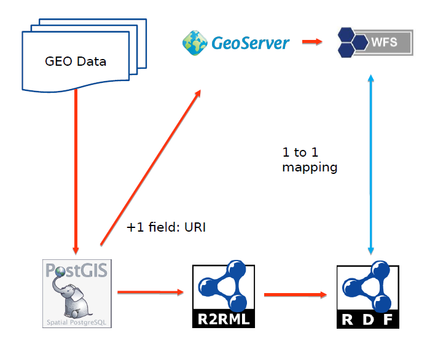

This document advises on best practices related to the publication and usage of spatial data on the Web; the use of Web technologies as they may be applied to location. The best practices are intended for practitioners, including Web developers and geospatial experts, and are compiled based on evidence of real-world application. These best practices suggest a significant change of emphasis from traditional Spatial Data Infrastructures by adopting a Linked Data approach. As location is often the common factor across multiple datasets, spatial data is an especially useful addition to the Linked Data cloud; the 5 Stars of Linked Data paradigm is promoted where relevant.
Status of This Document
This section describes the status of this document at the time of its publication. Other documents may supersede this document. A list of current W3C publications and the latest revision of this technical report can be found in the W3C technical reports index at https://www.w3.org/TR/.
In response to public comment and feedback, this draft is a substantial revision of the FPWD (changes are listed in section F.1Changes since the first public working draft of 19 January 2016). However, given that our aspiration is to provide actionable advice and guidance to practitioners (e.g. those directly publishing spatial data on the Web themselves, or those developing software tools to assist that publication) the editors recognize that there is still much to do before this best practices document is complete. Most notably, the best practices themselves (see section 13.The Best Practices) typically lack examples to illustrate how each best practice should be applied.
A new section (see 15.Narrative - the Nieuwhaven flooding) has also been added to introduce a coherent set of examples for publishing various types of spatial data on the Web. During the preparation of this draft, the editors intended to use this section as mechanism to help readers understand how they might apply the general best practices from [DWBP] and the specific best practices relating to spatial data published here to their own spatial data publication challenges. This current draft includes only the overview for each case study and does not (yet) describe the activities that each actor should undertake in order to publish their spatial data on the Web. Furthermore, given that this incomplete section is already quite lengthy, the editors recognize that this may not be the most effective method to communicate how to use the best practices. An alternative approach will be provided in the next public draft that (a) uses the flooding scenario as the basis for the examples embedded within each best practice, and (b) provides the reader with a pathway to help navigate through both sets of best practices by presenting a would-be spatial data publisher with questions they should consider and helping them to identify which best practices they should prioritize. The beginning of this “spatial data publication pathway” is presented in section 10.How to use these best practices, albeit that it is only about one-quarter complete and does not yet cover topics like the choice of data format or vocabulary. Given sufficient time and resource, the detailed case studies for the flooding scenario may be published as supporting material. Feedback on the relative merits of these approaches is requested.
Looking at the current state of this document, there are a number of elements that are still missing or largely incomplete. Most notably, this includes the examples for each best practice that will illustrate the proposed approaches. These are considered crucial to help readers understand how to apply the best practices. Future drafts of this document are also likely to see: further consolidation of best practices (there is still some overlap with [DWBP] to be resolved), pointers to the real-world evidence where we see these best practices being applied, coherent references to the other deliverables of the Spatial Data on the Web working group and continued editorial change.
The editors would like to thank everyone for their comments and feedback on the FPWD and encourage reviewers to continue this critique.
For OGC: This is a Public Draft of a document prepared by the Spatial Data on the Web Working Group (SDWWG) - a joint W3C-OGC project (see charter). The document is prepared following W3C conventions. The document is released at this time to solicit public comment.
Publication as a Working Group Note does not imply endorsement by the W3C Membership. This is a draft document and may be updated, replaced or obsoleted by other documents at any time. It is inappropriate to cite this document as other than work in progress.
Increasing numbers of Web applications provide a means of accessing data. From simple visualizations to sophisticated interactive tools, there is a growing reliance on data. The open data movement has lead to many national, regional and local governments publishing their data through portals. Scientific and cultural heritage data is increasingly published on the Web for reuse by others. Crowd-sourced and social media data are abundant on the Web. Sensors, connected devices and services from domains such as energy, transport, manufacturing and healthcare are becoming commonly integrated using the Web as a common data sharing platform.
The Data on the Web Best Practices [DWBP] provide a set of recommendations that are applicable to the publication of all types of data on the Web. Those best practices cover aspects including data formats, data access, data identifiers, metadata, licensing and provenance.
Location information, or spatial data, is often a common thread running through such data; describing how things are positioned relative to the Earth in terms of coordinates and/or topology.
Within this document our focus is the somewhat broader concern of spatial data; data that describes anything with spatial extent (i.e. size, shape or position) whether or not it is positioned relative to the Earth.
Similarly to the challenges identified in [DWBP] relating to publishing data on the Web, and therefore not making use of the full potential of the Web as a data sharing platform, there is a lack of consistency in how people publish spatial data.
It is not that there is a lack of spatial data on the Web; the maps, satellite and street level images offered by search engines are familiar and there are many more examples of spatial data being used in Web applications.
However, the data that has been published is difficult to find and often problematic to access for non-specialist users. The key problems we are trying to solve in this document are discoverability, accessibility and interoperability. Our overarching goal is to enable spatial data to be integrated within the wider Web of data; providing standard patterns and solution that help solve these problems.
2. Audience
This section is non-normative.
Our goal in writing this best practice document is to support the practitioners who are responsible for publishing their spatial data on the Web or developing tools to make it easy for others to work with spatial data.
We expect readers to be familiar both with the fundamental concepts of the architecture of the Web [WEBARCH] and the generalized best practices related to the publication and usage of data on the Web [DWBP].
We aim to provide two primary pathways into these best practices:
for those already familiar with publishing data on the Web who want to better exploit the spatial aspects of their data; and
for those who publish spatial data through Spatial Data Infrastructures and want to better integrate that data within the wider Web ecosystem.
In each case, we aim to help them provide incremental value to their data through application of these best practices.
This document provides a wide range of examples that illustrate how these best practices may be applied using specific technologies. We do not expect readers to be familiar with all the technologies used herein; rather that readers can identify with the activities being undertaken in the various examples and, in doing so, find relevant technologies that they are already aware of or discover technologies that are new them.
In this document we focus on the needs of data publishers and the developers that provide tools for them. That said, we recognize that value can only be gained from
publishing the spatial data when people use it! Although we do not directly address the needs of those users, we ask that data publishers and developers reading this document do not forget about them; moreover, that they always consider the needs of users when publishing spatial data or developing the supporting tools. All of our best practices are intended to provide guidance about the publishing spatial data to improve ease of use. As we said above: the key problems we are trying to solve in this document are discoverability, accessibility and interoperability. We hope that the examples included in the urban flooding scenario will help illustrate how users may benefit from the application of these best practices.
3. Scope
This section is non-normative.
All of the best practices described in [DWBP] are relevant to publication of spatial data on the Web. Some, such as Provide data
license information need no further elaboration in the context of spatial data. However, other best practices from [DWBP] are further refined in this document to provide more specific guidance for spatial data.
The best practices described below are intended to meet requirements derived from the scenarios in [SDW-UCR] that describe how spatial data in commonly published and used on the Web.
In line with the charter, this document provides advice on:
The choice of ontology and data format to be used when encoding spatial data;
The use of URIs for identifiers of resources described in spatial data;
The use of metadata to complement spatial data; and
The use of APIs to expose spatial data.
Discussion of activities relating to rending spatial data as maps is explicitly out of scope.
We extend [DWBP] to cover aspects specifically relating to spatial data, introducing new best practices only where necessary. In particular, we consider the individual resources, or Spatial Things, that are described within a dataset.
We consider a ‘programmable web’, formed by a network of connected services, products, data and devices, each doing what it is good at, to be the future of the Web. So whether we are talking about Big, Crawlable, Linked, Open, Closed, Small, Spatial or Structured Data; our starting point is that it needs to be machine-friendly and developer-friendly: making it as programmable as possible.
The best practices described in this document are compiled based on evidence of real-world application. Where the Working
Group have identified issues that inhibit the use or interoperability of spatial data on the Web, yet no evidence of real-world application is available, the editors present these issues to the reader for consideration, along with any approaches recommended by the Working Group. Such recommendations will be clearly distinguished as such in order to ensure that they are not confused with evidence-based best practice.
Devise a way to make best versus emerging practices clearly recognizable in this document.
The normative element of each best practice is the intended outcome. Possible implementations are suggested and, where appropriate, these recommend the use of a particular technology.
An end-to-end narrative based around an urban flooding scenario is used to provide context for our examples. We hope that readers are able to identify with the various actors in the scenario, and the activities those actors are undertaking, in order to help identify which best practices and implementation approaches are relevant for their task.
We intend this best practice to be durable; that is that the best practices remain relevant for many years to come as the specific technologies change. However, in order to provide actionable guidance, i.e. to provide readers with the technical information they need to get their spatial data on the Web, we try to balance between durable advice (that is necessarily general) and examples using currently available technologies that illustrate how these best practices can be implemented. We expect that readers will continue to be able to derive insight from the examples even when those specifically mentioned technologies are no longer in common usage, understanding that technology ‘y’ has replaced technology ‘x’.
4. Spatial Things, Features and Geometry
In spatial data standards from the Open
Geospatial Consortium (OGC) and the 19100 series of ISO geographic information standards from ISO/TC 211 the primary entity is the
feature. [ISO-19101] defines a feature as an: “abstraction of real world phenomena”.
This terse definition is a little confusing, so let’s unpack it.
Firstly, it talks about “real world phenomena”; that’s everything from highways to helicopters, parking meters to postcode areas, water bodies to weather fronts and more. These can be physical things that you can touch (e.g. a phone box) or an abstract concept that has spatial extent (e.g. a postcode area). Features can even be fictional (e.g. “Dickensian London”) and may even lack any concrete location information such as the mythical Atlantis.
The key point is that these “features” are things that one talks about in the universe
of discourse - which is defined in [ISO-19101] as the “view of the real or hypothetical world that includes everything of interest”.
Secondly, the definition of feature talks about “abstraction”. Take the example of Eddystone Lighthouse. A helicopter pilot might see it a “vertical obstruction” and be interested in attributes such as its height and precise location. Whereas a sailor may see it as a “maritime navigation aid” and need information about its light characteristic and general location. Depending on one’s set of concerns, only a subset of the attributes of a given “real world phenomenon” are relevant. In the case of Eddystone Lighthouse, we defined two separate “abstractions”. As is common practice in many information modelling activities, the common sets of attributes for a given “abstraction” are used to define classes. In the parlance of [ISO-19101], such a class is known as “feature type”.
Note
Although the exact semantics differ a little, there is a good correlation between the concept of “feature type” as defined in spatial data standards and the concept of “class” defined in [RDF-SCHEMA]. The former is an information modelling construct that binds a fixed set of attributes to an identified resource, whereas the latter defines the set of all resources that share the same group of attributes.
When combined with the open-world assumption embraced by RDF Schema and the Web Ontology Language (OWL) [OWL2-OVERVIEW], the set-based approach to classes provides more flexibility when combining information from multiple sources. For example, the “Eddystone Lighthouse” resource can be seen as both a “vertical obstruction” and a “maritime navigation aid” as it meets the criteria for membership of both sets. Conversely, this flexibility makes it much more difficult to build software applications as there is no guarantee that an information resource will specify a given attribute. Web standards such the Shapes Constraint Language [SHACL] are being defined to remedy this issue.
However, the term “feature” is also commonly used to mean a capability of a system, application or component. Also, in some domains and/or applications no distinction is made between "feature" and the corresponding real-world phenomena.
To avoid confusion, we adopt the term “spatial thing” throughout the remainder of this best practice document. “Spatial thing” is defined in [[W3C-BASIC-GEO] as “Anything with spatial extent, i.e. size, shape, or position. e.g. people, places, bowling balls, as well as abstract areas like cubes”.
The concept of “spatial thing” is considered to include both "real-world phenomena" and their abstractions (e.g. “feature” as defined in [ISO-19101]). Furthermore, we treat it as inclusive of other commonly used definitions; e.g. Feature from [NeoGeo], described as “A geographical feature, capable of holding spatial relations”.
Note
A spatial thing may move. We must take care not to oversimplify our concept of spatial thing by assuming that it is equivalent to definitions such as Location (from [DCTERMS]) or Place (from [SCHEMA-ORG]), which are respectively described as “A spatial region or named place” and "Entities that have a somewhat fixed, physical extension".
How do we ensure alignment with the terminology being used in the further
development of GeoSPARQL? We expect a new spatial ontology to be published which will contain clear and unambiguous definitions for the terms used therein.
Looking more closely, it is important to note that geometry is a property of a spatial
thing.
Example 2: Eddystone Lighthouse geometry (encoded as GeoJSON)
In actual fact, this is only one geometry that may be used to describe Eddystone Lighthouse. Other geometries might include a 2D polygon that defines the footprint of the lighthouse in a horizontal plane and a 3D solid describing the volumetric shape of the lighthouse.
Furthermore, these geometries may be subject to change due to, say, a resurvey of the lighthouse. In such a situation, the geometry object would be updated- but the spatial
thing that we are talking about is still Eddystone Lighthouse. Following the best practices presented below, we use a HTTP URI to unambiguously identify Eddystone Lighthouse:
http://d-nb.info/gnd/1067162240 (URI sourced from Deutsche Nationalbibliothek).
We say that the spatial thing is disjoint from the geometry object. The spatial
thing, Eddystone Lighthouse (http://d-nb.info/gnd/1067162240), is the “real world phenomenon” about which we want to state facts (such as it has a focal height is at 41 metres above sea level) and link to other real world phenomena (for example, that it is located at Eddystone Rocks, Cornwall; another spatial thing identfied as
http://sws.geonames.org/2650253/ by GeoNames).
5. Coverages: describing properties that vary with location (and time)
Many aspects of spatial things can be described with single-valued, static properties. However, in some applications it is more useful to describe the variation of property values in space and time. Such descriptions are formalized as coverages. Users of spatial information may employ both viewpoints.
So what is a coverage? As defined by [ISO-19123] it is simply a data structure that maps points in space and time to property values. For example, an aerial photograph can be thought of as a coverage that maps positions on the ground to colours. A river gauge maps points in time to flow values. A weather forecast maps points in space and time to values of temperature, wind speed, humidity and so forth. One way to think of a coverage is as a mathematical function, where data values are a function of coordinates in space and time.
Note
Sometimes you’ll hear the word “coverage” used synonymously with “gridded data” or “raster data” but this isn’t really accurate. You can see from the above paragraph that non-gridded data (like a river gauge measurement) can also be modelled as coverages. Nevertheless, you will often find a bias toward gridded data in discussions (and software) that concern coverages.
A coverage is not itself a spatial thing. The definition above presents a coverage as a data construct - in which case, it does not exist in the real world. Accordingly, we might say in the hydrology example, where a river gauge measures flow values at regular sampling times, that the “river segment” (a spatial thing) has a property “flow rate” that is expressed as coverage data.
signals in coverages may be used to provide the evidence for the existence, location and type of spatial things; for example, within a geophysical borehole the variation in soil/rock type may be used to infer teh presence of particular rock-units at underground locations
as the property value of a spatial thing whose value varies within the extent of that spatial thing; for example, the varying strength of mobile-network coverage throughout the UK
the values of a common property for a distributed set of spatial things provide a discrete sampling of a coverage; for example, the measurement of soil moisture based at a set of sampling stations can be compiled to show the spatial variation of soil moisture across the region where the sampling stations are located
A coverage can be defined using three main pieces of information:
The domain of the coverage is the set of points in space and time for which we have data values. For example, in a river gauge measurement, the domain is the set of times at which the flow was measured. In a satellite image, the domain is the set of pixels. In a weather forecast, the domain is a set of grid cells.
The range of the coverage is the set of measured, simulated or observed data values. A single coverage may record values for lots of different quantities; for example a weather forecast predicts values for many things (temperature, humidity etc) on the same domain. So the range of a coverage often consists of a number of lists of data values, one for each measured variable. Each element within each list corresponds with one of the elements of the domain (e.g. a pixel or grid cell).
The range metadata describes the range of the coverage, to help users to understand what the data values mean. This may include links to definitions of variables, units of measure and other bits of useful information.
Usually, the most complex piece of information in the coverage is the definition of the domain. This can vary quite widely from coverage type to coverage type, as the list above shows. For this reason, coverages are often defined by the spatiotemporal geometry of their domain. You will hear people talking about “multidimensional grid coverages” or “timeseries coverages” or “vertical profile coverages” for example.
6. Spatial relations
A spatial relation specifies how an object is located in space in relation to a reference object. Commonly used types of spatial relations are: topological, directional and distance relations.
Topological relations describe the relationships between geometric objects that are invariant to rotation, translation and scaling. As such, topological relations can support qualitative spatial reasoning without reference to the geometries themselves; for example to assert that object A touches object B. These relations, also known as “spatial predicates”, include concepts such as: equals, disjoint, intersects, touches, within, contains, overlaps and crosses.
Directional relations specify the relative direction between object and reference. Examples include: left, in front of and astern.
Distance relations specify how far the object is from the reference object. Examples include: at, nearby and far away.
Introduction to CRS does not yet cover non-geographic cases.
Best Practice scope is "spatial data" - which includes non-geographic location (e.g. where things aren't positioned relative to the Earth). For example, we have a microscopy use case where the locations of cells are described.
One of the most fundamental aspects of publishing spatial data, data about location, is how to express and share the location in a consistent way. Latitude and Longitude coordinates provide a mechanism to locate a point anywhere on the Earth and offer a level of precision well suited for many applications; e.g. they can express a location to within a few metres perfect for locating a Starbucks, geocoding a photograph or capturing an augmented reality Pokemon hiding in your local park. Everyone knows that of course, but there are a few pitfalls to be aware of when expressing your spatial data.
Latitude and Longitude measurements are angular measurements expressing a position on the surface of the Earth relative to a point at the centre of the Earth, a meridian and the equator. Since the real surface of the Earth is complicated to represent mathematically, it is not used directly. An approximation to the topographical surface of the Earth is the geoid, which is roughly equivalent to the mean sea level excluding the effects of winds and permanent currents such as the Gulf Stream. While much smoother than the real surface of the Earth, the geoid surface still has lumps and bumps caused by the uneven distribution of mass within the Earth. For convenient mathematical operations, the geoid is approximated by an ellipsoid - a flattened sphere.
Depending on your location, different ellipsoids will provide a better approximation of the local Earth's surface at the expense of a poorer match elsewhere. The choice of ellipsoid is fundamental to a CRS: it defines the geodetic datum that in simple terms tells us where we make the angular measurements from (e.g. the Equator and Greenwich Meridian) and an agreed definition of the size and shape of that flattened sphere.
The invention of GPS enabled improved measurement of the Earth's shape. The World Geodetic System 1984 (WGS84) defines a datum that is derived from this measurement and provides a good approximation at all locations on the Earth. However, the choice of datum can have significant effect on how Latitude and Longitude relate to position on the Earth's surface. For example, since WGS84 is a world wide system, it differs significantly from local systems; the difference between WGS84 and the European system ED50 is about 150 meters, and the average difference between WGS84 and the Réunion 1947 system is 1.5 kilometers. Another issue is that points on the surface of the earth are actually moving relative to the coordinate system, due to geologic processes. You may think this is of interest only to geologists, but consider that Australia has moved around 1.5m since the datum was last reset 20 years ago. Re-calculating the datum from time to time, or maybe continuously, really does matter.
When trying to locate a land parcel, the choice of datum, and hence choice of CRS, matters. This is even more acute for high precision applications such as automated agriculture and self-driving cars.
A perennial challenge for cartographers is relating the curved surface of the Earth to the plane of a map - or computer screen. Map projections provide a means to achieve this with some control over deformations: one can preserve either the angles or the areas, but not both in same time. There are many choices of projection, each designed for particular tasks: equirectangular, mercator, stereographic, orthographic etc. CRS often use projected measurements defined on a flat, two-dimensional surface which are easier to use than angular measurements - especially if you are trying to compute the distance between two points! For example, the Web Mercator projection is used by most web mapping applications (such as Google Maps). CNN explore some of the challenges relating to map projections in their article "What's the real size of Africa?".
It is also worth noting that many applications provide or use latitude and longitude, but often forget about the third dimension: ellipsoidal height (also referred to as vertical elevation).
A Coordinate Reference System (CRS) defines a local, regional or global coordinate system that can be used to locate spatial entities in two or three dimensions. It also defines the order in which the coordinates are provided; Longitude and Latitude aren't always provided in the same order! CRS may also provide a map projection. CRSs can be referred to by using a Spatial Reference System Identifier (SRID) and may be described using a number of standard encoding, such as OGC [WKT-CRS]. Examples of SRIDs include the EPSG (European Petroleum Survey Group) codes defined by the International Association of Oil and Gas Producers. Most of the GIS vendors create their own SRID implementation or refer to an authority such as the EPSG registry.
Three of the commonly used CRS based on the WGS84 datum that provide global coverage are EPSG:4326 (Latitude and Longitude angular measurements in decimal degrees), EPSG:4978 (Latitude and Longitude angular measurements in decimal degrees plus ellipsoidal height in meters) and EPSG:3857 - also known as Web Mercator - (projected measurements in meters). More information on spatial reference systems can be found at Wikipedia.
The process of converting coordinates between CRSs that use different datums and or projections can be also very involved - especially where ellipsoidal height is missing! EPSG guidelines say that in such a case reasonable assumptions are:
Height = 0 meters (i.e. we are standing on the surface of the ellipsoid)
The height is given by a digital elevation model (i.e. we are standing on the surface of the planet)
A number of open source software implementations are available to help users do such conversions. For example Apache SIS® provides an application programming interface (API) to convert coordinates into different coordinate systems (for more information on Apache SIS® please refer to their documentation). Other implementations include the Geospatial Data Abstraction Library (GDAL) and the Cartographic Projections Library (PROJ.4) for which there is a JavaScript implementation.
8. Linked Data
The term ‘Linked Data’ refers to an approach to publishing data that puts linking at the heart of the notion of data, and uses the linking technologies provided by the Web to enable the weaving of a global distributed database. By naming real world entities - be they web resources, physical objects such as the Eiffel Tower, or even more abstract things such as relations or concepts - with URLs data can be published and linked in the same way web pages can. [LDP-PRIMER]
★ make your stuff available on the Web (whatever format) under an open license
★★ make it available as structured data (e.g., Excel instead of image scan of a table)
★★★ make it available in a non-proprietary open format (e.g., CSV as well as of Excel)
★★★★ use URIs to denote things, so that people can point at your stuff
★★★★★ link your data to other data to provide context
We think that the concept of Linked Data is fundamental to the publishing of spatial data on the Web: it is the links that connect data together that are the foundational to the Web of data.
In a departure from the approach adopted within typical spatial data
infrastructures, these best practices promote a Linked Data approach.
Sources such as the Best Practices for Publishing Linked Data [LD-BP] assert a strong association between Linked Data and the Resource Description Framework (RDF) [
RDF11-PRIMER]. Yet we believe that Linked Data requires only that the formats used to publish data support Web linking (see [WEBARCH] §4.4 Hypertext). 5 Star Data (based on [5STAR-LOD]) asserts only that data formats be open and non-proprietary (★★★); and infers the need for data formats to support use of URIs as identifiers (★★★★) and Web linking (★★★★★).
Within this document we include examples that use RDF and related technologies such as triple stores and SPARQL because we see evidence of its use in real world applications that support Linked Data. However, we must make clear to readers that there is no requirement for all publishers of spatial data on the Web to embrace the wider suite of technologies associated with the Semantic Web; we recognize that in many cases, a Web developer has little or no interest in the toolchains associated with Semantic Web due to the addition of complexity to any Web-centric solution.
Although we think that Linked Data need not necessarily require the use of
RDF, it is probably easiest to do so. We note that [JSON-LD] provides a bridge between those worlds by providing a data format that is compatible with RDF but relies on standard JSON tooling.
Furthermore, as the examples in this document illustrate, we often see a ‘hybrid’ approach being used in real-world applications; using RDF to work with graphs of information that interlink resources, while relying on other technologies to query and process the spatial aspects of that information for performance reasons.
9. Why are traditional Spatial Data Infrastructures not enough?
Finding, accessing and using data disseminated through spatial data infrastructures (SDI) based on OGC web services is difficult for non-expert users. There are several reasons, including:
In spatial data infrastructures, catalog services are intended to be used for discovering spatial assets, not the general purpose search engines of the Web. OGC web services do not address indexing of their content by those search engines.
By design, the catalog services only provide access to metadata - and in general metadata that is focused on the needs of expert users - not the data itself.
Users cannot just “follow links” to access data, it is typically necessary to construct some kind of query to access data. Often these queries are complex to define, requiring in depth knowledge both of the data structure and the domain-specific query language.
In addition, it is often difficult for non-expert users to understand and use the data. Part of this are domain-specific complexities that are difficult for non-experts (e.g., handling of coordinates in different coordinate reference systems), but hard to avoid entirely. But the datasets often address requirements of expert communities with diverse needs, resulting in comprehensive, but complex specifications that cover many edge cases, too. And the data is typically available in formats that are not easy to process for non-expert users.
However, spatial data infrastructures are a key component of the broader spatial
data ecosystem. Such infrastructures typically include workflows and tools related to the management and curation of spatial datasets, and provide mechanism to support the rich set of capabilities required by the expert community. Our goal is to help spatial data publishers build on these foundations to enable the spatial data from SDIs to be fully integrated with the Web of data.
Estimate that this covers only a quarter of the "spatial data publication pathway" that we are trying to help would-be spatial data publishers navigate. More material to be added describing the full range of considerations when publishing spatial data on the Web in the next public draft.
10.1 What are the starting points?
Preparations for publishing spatial data on the Web need to start somewhere. Typically, your spatial data will be in the following places:
plain text documents; e.g. historical texts, government reports, blog posts etc.
data files containing structured content or markup; e.g. geospatial vector data in Shapefile or GML format, statistical data in tabular CSV format or a spreadsheet, as GPX data with “waypoints” and “tracks”, satellite imagery in GeoTIFF, climate simulations in CF-NetCDF etc.
a data repository; e.g. PostGIS (a spatially enabled relational database), Elasticsearch (a document-oriented noSQL repository based on Apache Lucene), Apache Jena’s TDB (an RDF triple store)
exposed via an existing API; including OGC-compliant web services such as WFS and WCS
If your spatial data is managed within a software system it is likely that you will be able to access that data through one or more of the methods identified above; as structured data from a bulk extract (e.g. a “data dump”), via direct access to the underpinning data repository or through a bespoke or standards-compliant API provided by the system.
As working with specific spatial data management systems is beyond the scope of this best practice document we will assume that one of the four methods identified above is your starting point.
Each of these starting points have their own challenges, but working with plain text documents can be particularly tricky as you will need to parse the natural language to identify the spatial things and their properties before you can proceed any further. Natural Language Processing (NLP) is also beyond the scope of this best practice document - so we will assume that you’ve already completed this step and have parsed any plain documents into structured data records of some kind.
10.2 What are you talking about?
The Web is an information space in which the items of interest, referred to as resources, are identified by URIs ([WEBARCH] §1. Introduction). The spatial data you want to publish is one such resource. Depending on the nature of your spatial data, it may be a single dataset or a collection of datasets. [VOCAB-DCAT] provides a useful definition of dataset: “A collection of data, published or curated by a single agent, and available for access or download in one or more formats.”
Deciding whether your spatial data is a single dataset or not is somewhat arbitrary. That said, it is often useful to consider attributes such as the license under which the data will be made available, the refresh or publication schedules, the quality of the data and the governance regime applied in managing the data. Typically, all of these attributes should be consistent within a single dataset.
We also need to look inside the datasets at the resources described within your data. If you want these resources to be visible within the Web’s information space, by which we mean that others can refer to or talk about those resources, then they must also be assigned URIs (see [DWBP] Best Practice 10: “Use persistent URIs as identifiers within datasets”). These URIs are like 'Web-scale foreign keys' that enable information from different sources to be stitched together.
In spatial data, our primary concern is always the spatial things; these are the things with spatial extent (i.e. size, shape, or position) that we talk about in our data - anything from physical things like people, places and post boxes to abstractions such as administrative areas. Spatial things should always be assigned URIs (see Best Practice 7: “Use globally unique HTTP identifiers for spatial things”) - potentially reusing existing URIs that are already in common usage. A common pattern used when assigning URIs to spatial things is append the locally-scoped identifiers used within the dataset to a URI path within an internet DNS domain where one has administrative rights to publish content.
Depending on how you organize your data, it may also be helpful to give your geometry objects URIs. For example, you may want to reuse a line string when describing the boundaries of adjacent administrative areas, or you may need to serve geometry data from an alternate URL because property data and geometry data are managed in different systems. Essentially, if you want to refer to a resource on the Web, you need to assign a URI to it.
10.3 Who is your audience?
Once you have determined the subjects of your spatial data, you should then consider your users - and the software tools, applications and capabilities they might have at their disposal.
Your objective should be to reduce the “friction” created for users to work with your data by providing it in a form that is closest to what their chosen software environment supports.
It is likely that you will be able to identify your intended “community of use” - and on that basis discern how best to publish data for them. However, increasingly data is being repurposed to derive insight in ways that the original publisher had never foreseen. This “unanticipated re-use” can add significant value to your data (e.g. because you didn’t know that your data could be used that way!) but this introduces the challenge of working with a large set of unknown users, developers and devices.
So while you should always prioritize your known users when publishing spatial data on the Web (often, because they are your stakeholders and their happiness can lead to continued funding!), it will often reap dividends to “design for the masses”: providing your spatial data in a way that is most readily usable with the (geo)spatial JavaScript libraries commonly employed across the Web.
Things that you should consider when choosing how to publish your spatial data on the Web are described next …
10.4 Parse that!
For users to work with your data, software agents (a.k.a. the “machines”) need to be able to parse it - to resolve the serialized data into its component parts. You should make your data available in machine-readable, standardized data formats (see [DWBP] Best Practice 12: “Use machine-readable standardized data formats”); e.g. JSON [RFC7159], XML [XML11], CSV [RFC4180] and other tabular data formats, YAML [YAML], protocol-buffers [PROTO3] etc. According to the 5 Star Data [5STAR-LOD] scheme, using open and non-proprietary structured data formats yields a 3-star rating (★★★), so you’re well on your way to good practice.
Consider that Web applications are most often written in JavaScript, probably the most “frictionless” data format for Web developers is JSON. That said, it is reasonably simple to parse other formats for use in JavaScript using widely available libraries. In some cases, there are even standards to define how this should be done (for example: [CSV2JSON])
You should also consider whether there are any attributes of these machine-readable standardized data formats that offset a little inconvenience for your data user. For example, protocol-buffers [PROTO3] and CBOR [RFC7049] (“Concise Binary Object Representation”) provide a significantly more compact encoding that JSON. The inconvenience of having to use additional libraries to parse these binary formats is offset by the convenience of much faster load times.
Imagery formats JPEG [JPEG2000] and PNG [PNG] can also be coerced to carry data; providing 3 or 4 channels of 8-bit data values. This can be an attractive way to encode gridded coverage data values as it is highly compact. So long as you don’t apply compression algorithms to the “image”; while compression retains visual integrity, it can ruin your data integrity. Experience indicates that network providers often do apply compression to image formats - even if you don’t want that. The key point is to ensure that you choose formats that are unaffected by the transport network.
When selecting the data format, make sure that your community of use have access to libraries or other software components required to work with that format. Let’s take [GeoTIFF] as an “anti-example”: it’s the de facto format for encoding geo-referenced imagery data - such as that available from satellites - but the lack of widely available libraries for working with it in a JavaScript application make it unsuitable for publishing spatial data on the Web. Although a developer could write a byte-level parser, it puts an additional burden on any re-use.
11. Best Practices Template
This section presents the template used to describe Spatial Data on the Web Best Practices.
Need to review best practices text to ensure that they consistently use an imperative style- like "xx should be yyy"
Best Practice Template
Short description of the BP
Why
This section answers crucial questions:
Is the use case specifically about Spatial data on the Web? (Resolved 29/1/2015)
is the use case including data published, reused, and accessible via Web technologies? discussed 25/2/2015, agreed
Has a use case a description that can lead to a testable requirement? (discussed 25/2/2015, wording?)
public vs private web (suggestion to be worded, discussed 25/2/2015)
A full text description of the problem addressed by the best practice may also be provided. It can be any length but is likely to be no more than a few sentences.
Intended Outcome
What it should be possible to do when a data publisher follows the best practice.
Possible Approach to Implementation
A description of a possible implementation strategy is provided. This represents the best advice available at the time of writing but specific circumstances and future developments may mean that alternative implementation methods are more appropriate to achieve the intended outcome.
How to Test
Information on how to test the BP has been met. This might or might not be machine testable.
Best Practice 18: Describe the location according to a Coordinate Reference System
13. The Best Practices
13.1 Spatial Metadata
[DWBP] provides best practices discussing the provision of metadata to support discovery and reuse of data (see [DWBP] Metadata for more details). Providing metadata at the dataset level supports a mode of discovery well aligned with the practices used in Spatial Data
Infrastructure (SDI) where a user begins their search for spatial data by submitting a query to a catalog. Once the appropriate dataset has been located, the information provided by the catalog enables the user to find a service end-point from which to access the data itself - which may be as simple as providing a mechanism to download the entire dataset for local usage or may provide a rich API enabling the users to request only the required parts for their needs. The dataset-level metadata is used by the catalog to match the appropriate dataset(s) with the user's query.
This section includes best practices for including the spatial extent and the CRS of the dataset in the metadata. These are the extra metadata items needed to make spatial datasets discoverable and reusable. A third best practice in this section helps you go a step further: exposing spatial data on the web in such a way that the individual entities within the dataset are discoverable.
Best Practice 1: Include spatial metadata
in dataset metadata
The description of datasets that have spatial features should include explicit metadata about the spatial coverage
For spatial data, it is often necessary to describe the spatial details of the dataset - such as spatial coverage or extent of the dataset or, put in simpler terms, which area of the world the data is about. This information is used, for example, by
SDI catalog services that offer spatial querying to find data - but also by users to understand the nature of the dataset.
Intended Outcome
Dataset metadata should include the information necessary to enable spatial queries within catalog services such as those provided by SDIs.
Dataset metadata should include the information required for a user to evaluate whether the spatial data is suitable for their intented application.
Possible Approach to Implementation
Provide as much spatial metadata as necessary, but at least the spatial coverage. Other examples of spatial metadata are:
number of dimensions (1D, 2D, 3D)
spatial representation type (e.g. grid, vector, text table)
In Spatial Data Infrastructures the accepted standard for describing metadata is [
ISO19115].
To provide information about the spatial attributes of the dataset on the web one can:
As shown in [DWBP] best practice Descriptive Metadata: Include the spatial coverage of the features described by the dataset using [
VOCAB-DCAT] and a reference to a named place in a common vocabulary for geospatial semantics (e.g. GeoNames),
Again, use [VOCAB-DCAT], but instead of a reference to a named place, use a set of coordinates to specify the boundaries of the area either as a bounding box (add glossary ref) or a polygon.
Use the spatial extension of [VOCAB-DCAT], [GeoDCAT-AP], to specify spatial attributes that are not available in [VOCAB-DCAT]. GeoDCAT-AP provides an RDF syntax binding for the metadata elements defined in the core profile of [ISO19115] and in the INSPIRE metadata schema [INSPIRE-MD].
Use geospatial ontologies (see W3C Geospatial Incubator Group (GeoXG)'s report) to describe the spatial data for the datasets.
How to Test
Check if the spatial metadata for the dataset itself includes the overall features of the dataset in a human-readable format.
Check if the descriptive spatial metadata is available in a valid machine-readable format.
This BP is under review by the WG to see if it is sufficiently covered in DWBP. (see action)
Why
For users of spatial or temporal data it should always be possible to look up spatial, temporal or thematic metadata about a given value. This allows them to determine, for example, which reference system (CRS or TRS) and unit of measure (UoM) is used for a numeric value, the accuracy of the data value, and so on. Such metadata may be attached to metadata for collections, as described in Best Practice 1, or to individual values. The latter is necessary when this metadata is important for processing and interpreting the data, but varies from one value to the next. This information should be specified as explicit semantic data and/or be provided as linked to other resources.
Intended Outcome
The contextual data will specify spatial, temporal and thematic data and other information that can assist to interpret data values; this can include information related to quality, location, time, topic, type, etc.
Possible Approach to Implementation
The context required to interpret data values will require:
Specify explicit semantics that describe temporal, spatial and thematic information related to an entity
Provide links to other related resources that can describe contextual information related to an entity
Best Practice 3: Specify Coordinate Reference System for
high-precision applications
A coordinate referencing system (CRS) should be specified for high-precision applications to locate geospatial entities.
Why
The CRS is a special metadata attribute of spatial data that must be known for users to judge if the data is usable to them. Clients or users must always be able to determine what CRS is used. Sometimes the CRS is left implicit: it is then determined by the specification of the data format that is used. Preferably, the CRS is specified at least as part of the metadata so that clients and users can judge if the data is usable, and can find spatial data with a specific CRS.
The choice of CRS is sensitive to the intended domain of application for the spatial data. For the majority of applications a common global CRS (WGS84) is fine, but high precision applications (such as precision agriculture and defense) require spatial referencing to be accurate to a few meters or even centimeters. Specific, highly accurate CRS exist to provide a coordinate system for a specific region of the world (often a specific country). Spatial data from France is never going to use the Dutch coordinate system and vice versa.
Different CRS exist mainly because the positions on the surface of the earth relative to each other are constantly changing. For example, North America and Europe are receding from each other by a couple of centimeters per year, whereas Australia is moving several centimeters per year north-eastwards. So, for better than one meter accuracy in Europe, the European Terrestrial Reference System 1989 (ETRS89) was devised and it is frequently revised to take account of the drifting European tectonic plate. Consequently, coordinates in the ETRS89 system will change by a couple of centimeters per year with respect to WGS84.
Even if a CRS, tied to a tectonic plate, is used, local coordinates in some areas may still change over time, if the plate is rotating with respect to the rest of the earth. Many existing useful maps pre-date GPS and WGS84 based mapping, so that location errors of tens of meters, or more, may exist when compared to the same location derived from a different technology, and these errors may vary in size across the extent of a single map.
Another reason why different CRS exist has nothing to do with tectonic drift, but with projecting the 3D globe on a flat, 2D map: Cartesian projections. These are useful e.g. for calculating areas.
Note
The misuse of spatial data, because of confusion about the CRS, can result in catastrophic results; e.g. both the bombing of the Chinese Embassy in Belgrade during the Balkan conflict and fatal incidents along the East Timor border are generally attributed to spatial referencing problems.
Intended Outcome
Clients or users can determine which CRS is used. Also, a Coordinate Reference System (CRS) sensitive to the intended domain of application (e.g. high precision applications) for the spatial data should be chosen.
Possible Approach to Implementation
Recommendations about CRS referencing should consider:
If your goal is to make data available to mass-market web users, make it available in WGS84. This CRS is suitable for many applications, but be aware (and perhaps publish) the limitations of doing so.
If your goal is high accuracy, choose the best local CRS for your data.
Publishing data in multiple CRSs is fine, and may help users to combine your data with other sources, as well as serving multiple types of user.
It is preferable to explicitly state which CRS(s) you are using. For convenience, the CRS is often designated within the data format or vocabulary specification (e.g.
W3C WGS84 Geo Positioning
vocabulary) and, therefore, does not appear in the data itself. This is often considered as a default CRS. Data publishers and consumers should make sure they are aware of the specified CRS and any limitations that this may pose regarding the use of the data.
Where a specific CRS is required, the data publisher should choose a vocabulary where the CRS can be defined explicitly within the data.
This best practice goes one step beyond providing metadata as an way to make datasets discoverable. Current SDI approaches require a 2-step approach for discovery, beginning with a catalog query and then accessing the appropriate data service end-point. However, one of the criteria for exposing data on the Web is that it can be discovered directly using search engines such as Google, Bing and Yandex, or other services such as ‘sameAs.org’ (which harvests links) and HyperCat. Current SDI approaches treat spatial data much like books in a library where you must first use the librarian's card catalog index to find the book on the shelf. As for other types of data on the Web, we want to be able to find spatial resources directly; we want to move beyond the two-step discovery approach of contemporary SDIs and find the words, sentences and chapters in a book without needing to check the card catalog first. Not only will this make spatial data far more accessible, it mitigates the problems caused when catalogs have only stale dataset metadata and removes the need for data users to be proficient with the query protocol of the dataset's service end-point in order to acquire the data they need.
Exposing data on the Web means that it can be discovered directly using search engines. This doesn't mean metadata is no longer necessary; it is still needed for clients and users to judge the usability of the data for their purposes. Both metadata and data should be exposed in a discoverable way on the web. This provides a number of benefits:
Spatial data will become far more discoverable because a user does not need any special knowledge to find the SDIs catalog service.
Users can discover what data is actually available, rather than relying on the metadata that is infrequently published to the catalog and may have become stale.
Users do not need to be proficient with the query protocol of the dataset's service end-point in order to acquire the data they need.
Search engines should be able to use links and URIs to discover indexable spatial data and to prioritize those spatial data collections within a search result.
Search engines use links to discover content to index and to prioritize that content within a search result.
Intended Outcome
Spatial metadata and data should be discoverable directly using a search engine query.
Spatial metadata and data is indexable by search engines; a search engine Web crawler should be able to obtain descriptive and machine interpretable metadata response to a HTTP GET when dereferencing the URL of a SpatialThing and to determine links to related data for the Web crawler to follow.
Note
We make the assertion that (meta)data is not really 'on the web' until it's crawlable.
Possible Approach to Implementation
To make your metadata and your entity-level data indexable by search engines:
Generate one HTML page per resource - one page for the metadata record and one page for each entity in the dataset. Include structured markup (see schema.org) that the search engines can use to make more detailed assumptions about your resource(s) and drive better search performance. Either create pages beforehand or generate them at query time via an API.
Provide a path for search engines to find your pages - either crawling to each entity from a 'collection' object (which provides the entry point for the web crawler) or being directed by sitemaps.
Search engines may be used to search spatial data based on identifier, location, time, etc (some examples are provided in [Section III.A, Barnaghi et al.]. The search for spatial data can be similar to the typical search query, but the search and use of results in many cases will be done by software agents and other services like Google Now that interpret information.
More discussion is required on how to structure meaningful (spatial) queries with search engines (e.g. based on identifier, location, time etc.).
Note
As more spatial datasets are published that provide structured markup to search engine Web crawlers enabling the content of those datasets to be indexed, the more likely that search engines will provide richer and more sophisticated search mechanisms to exploit that markup which will further improve the ability of users to find spatial data.
How to Test
...
Evidence
Relevant requirements: {... hyperlinked list of use cases ...}
Benefits
Discoverability
13.2 Spatial Data Quality
[DWBP] provides a best practice discussing how the quality of data on the web should be described (see [DWBP] Data Quality for more details). This section is based on the Data Quality section from [DWBP] and adds a Best Practice specific for spatial data.
In the Spatial Metadata section we provided a Best Practice on how to deal with CRS in spatial data on the web. There is also a clear link between CRS and data quality, because the accuracy of spatial data depends for a large part on the CRS used. This can be seen as conformance of data with a "standard" - in this case, a (spatial or temporal) reference system. This is how you can describe spatial data quality using different vocabularies. We will provide an example in this section.
Best Practice 5: Describe the positional accuracy of
spatial data
Accuracy and precision of spatial data should be specified in machine-interpretable and human-readable form.
Why
The amount of detail that is provided in spatial data and the resolution of the data can vary. No measurement system is infinitely precise and in some cases the spatial data can be intentionally generalized (e.g. merging entities, reducing the details, and aggregation of the data) [Veregin].
Note
It is important to understand the difference between precision and accuracy. Seven decimal places of a latitude degree corresponds to about one centimeter. Whatever the precision of the specified coordinates, the accuracy of positioning on the actual earth's surface using WGS84 will only approach about a meter horizontally and may have apparent errors of up to 100 meters vertically, because of assumptions about reference systems, tectonic plate movements and which definition of the earth's 'surface' is used.
Intended Outcome
When known, the resolution and precision of spatial data should be specified in a way to allow consumers of the data to be aware of the resolution and level of details that are considered in the specifications.
Possible Approach to Implementation
Describe the accuracy of spatial data in a way that is understandable for humans.
In addition, describe the accuracy of spatial data in a machine-readable format. [
VOCAB-DQV] is such a format. It is a vocabulary for describing data quality, including the details of quality metrics and measurements.
We need some explanations for the approaches to describe positional (in)accuracy.
Example 8: GeoDCAT-AP specification of a dataset conformance with the INSPIRE Regulation on spatial data and services interoperability
a:Dataset a dcat:Dataset ;
dct:conformsTo <http://data.europa.eu/eli/reg/2010/1089/oj> .
<http://data.europa.eu/eli/reg/2010/1089/oj> a dct:Standard , foaf:Document ;
dct:title "COMMISSION REGULATION (EU) No 1089/2010 of 23 November 2010
implementing Directive 2007/2/EC of the European Parliament
and of the Council as regards interoperability of spatial
data sets and services"@en ;
dct:issued "2010-12-08"^^xsd:date .
The following example shows how DQV can express the precision of a spatial dataset:
Example 9: DQV specification of data quality
:myDataset a dcat:Dataset ;
dqv:hasQualityMeasurement :myDatasetPrecision, :myDatasetAccuracy .
:myDatasetPrecision a dqv:QualityMeasurement ;
dqv:isMeasurementOf :spatialResolutionAsDistance ;
dqv:value "1000"^^xsd:decimal ;
sdmx-attribute:unitMeasure <http://www.wurvoc.org/vocabularies/om-1.8/metre>
.
:spatialResolutionAsDistance a dqv:Metric;
skos:definition "Spatial resolution of a dataset expressed as distance"@en ;
dqv:expectedDataType xsd:decimal ;
dqv:inDimension dqv:precision
.
Spatial dataset, like most datasets, can change over time. When this happens a new version may be published on the Web. The best practices for dataset versioning described in the [DWBP] section on Data
Versioning apply to spatial datasets as well.
Entities and their properties within datasets can change over time and this change can be related to spatial properties, for example when a spatial thing moves from one location to another location, or when it becomes bigger or smaller.
Note
This section is based on the Data Versioning section from [DWBP] and adds a Best Practice specific for spatial data. This is about versioning on the property level, while the DWBP is concerned with the dataset level.
Best Practice 6: How to describe properties that
change over time
Entities and their data should have versioning with time/location references
Why
For some use cases you need to be able to explicitly refer to a particular version of information that describes a SpatialThing, or to infer which geometry is appropriate at a specific time, based on the versioning. To make this possible, the properties that are described for an entity should have references to the time and location that the information describing a SpatialThing was captured and should retain a version history. This allows you to reference the most recent data as well as previous versions and to also follow the changes of the properties.
Intended Outcome
By default, data users are provided with the most recent version of information about an identified resource.
Data users are able to refer to the information about an identified resource as it was at a given time.
Data users can browse through versions of the information about an identified resource that reflect how the resource changed over time.
Need to include guidance on when a lightweight approach (ignoring the change aspects) is appropriate
When entities and their properties can change over time, or are valid only at a given time, and this needs to be captured, it is important to specify a clear relationship between property data and its versioning information. How properties are versioned should be explained in the specification or schema that defines those properties. Temporal and/or spatial metadata should be provided to indicate when and where the information about the SpatialThing was captured.
As explained in Section 4, spatial things and geometries are different things, the geometries being properties of spatial things. One spatial thing could have several geometries, each giving a different representation of the thing. In general, there could be several information resources, in different datasets, that describe or refer to the same spatial thing; for example, one dataset has its location (as a point geometry) and date a lighthouse was built, another has data about its ownership or about shipwrecks near the same lighthouse. A third has a 3D representation of the lighthouse.
The distinction between spatial things and the information resources that describe them is often confusing and unhelpful. Mostly, people looking for information are interested in spatial things, not in information resources. Therefore the spatial things should get global identifiers so they can be found and referenced. The geometries should have global identifiers too so they can be referenced and reused; and must have them if they are managed elsewhere. The information resources could be given identifiers of their own when there's a specific reason to identify them separately.
[DWBP] provides best practices discussing globally unique identifiers and the use of HTTP (or HTTPS) URIs for these identifiers in order to support data discovery, usage and citation on the Web (see [DWBP] Data Identifiers for more details). This section includes a best practice on how to come up with good identifiers for spatial data.
There's still an open issue about identifier assignment. Do we recommend to assign different identifiers to spatial things and to information resources about those things? We seem to be close to consensus: use of the same identifier for both i.e. using the information resource identifier as indirect identifier for the spatial thing, is ok. Metadata about the information resource goes in the metadata.
Best Practice 7: Use globally unique HTTP identifiers
for spatial things
Spatial things referred to within datasets SHOULD have unique, persistent HTTP or HTTP(S) URIs as identifiers.
Why
A lot of spatial data is available 'via the Web' - but not really 'on the web': you can download datasets, or view, query and download data via web services, but it has not been so easy to reference a spatial thing within a dataset, like you would a web page, because the spatial things themselves don't have URIs. If they did, spatial data would be much easier to reuse and to integrate with other data on the Web.
Intended Outcome
Spatial things described or mentioned in a dataset will each be identified using a globally unique HTTP URI so that a given spatial thing can be unambiguously identified in statements that refer to that spatial thing.
Possible Approach to Implementation
Good identifiers for data on the Web should be dereferenceable/resolvable, which makes it a good idea to use HTTP URIs as identifiers. As explained in [DWBP] Best Practice 11: Use persistent URIs as identifiers within datasets, it is best to reuse existing (authoritative) identifiers when available, or else create your own.
1. Reuse identifiers when you can
For spatial data, a good approach for identifiers is to reuse the URIs used by organizations such as DBpedia and
GeoNames to identify SpatialThings. These are commonly used across many different applications and datasets. Public government data, such as national registers of addresses, buildings, and so on, are another good source of resource collections. Mapping and cadastral authorities maintain datasets that provide geospatial reference data. See also Appendix B. Authoritative sources of geographic identifiers for a list of good sources of geographic identifiers. In general, re-using well-known identifiers such as these is good practice because it makes it easy to recognize that data from different sources has the same subject. These identifiers are like 'Web-scale foreign keys', allowing information from different sources to be stitched together.
Additionally, when these authoritative identifiers are resolved, a considerable amount of useful information about the SpatialThing is often provided that can be used to supplement that which is provided by your own application. Examples include place names in multiple languages and geographic boundaries.
2. When there are no reusable identifiers, create your own
For guidance about persistent URIs when creating your own URIs, read [DWBP] Best Practice 10: Use persistent
URIs as identifiers of datasets. While that best practice is about datasets, many of the points are valid for identifiers of spatial things as well. Keep in mind not to use service endpoint URLs as a basis for your persistent URIs, as these are usually dependent on technology, implementation, and/or API version and will probably change when the implementation changes.
Often, dataset-scoped (local) identifiers are present in datasets and these can be converted or mapped to URIs for spatial things. For example, use row numbers from tabular data or record identifiers from geo-databases.
Should we describe a practice of identifiers being structured minimally at least for purposes of authority and uniqueness? And when to consider taxonomic meaning for primary or secondary identifiers.
3. Provide stable identifiers for spatial things that change over time
Spatial things can change over time, but their identifiers should be persistent so that links to them don't get broken.
Should we reference the paradox of the Ship of
Theseus to highlight there is no rigorous notion of persistent identity? - or is it just that there is no single notion.
Spatial things can change in different ways, and sometimes the change is such that it's debatable if it's still the same thing. Think carefully about the life cycle of the spatial things in your care, whether the changes matter for the application, and be reluctant to assign new identifiers. A lake that becomes smaller or bigger is generally still the same lake, but some links (e.g. from statistical datasets, or related to the boundary of the lake) need to target a specific version of its geometry.
Include information in your dataset that indicates when the statements made about the
SpatialThing are valid.
If your spatial things are versioned, a good solution is to provide a canonical, versionless URI for them, as well as date-stamped versions. You should also include information on the update frequency in the dataset metadata (see [DWBP] Best Practice 2: Provide descriptive metadata).
In this document there is no section on formats for publishing spatial data on the web. The formats are basically the same as for publishing any other data on the web: XML, JSON, CSV, RDF, etc. Refer to [DWBP] Data Formats for more information and best practices.
That being said, it is important to publish your spatial data with clear semantics, i.e. to provide information about the contents of your data. The primary use case for this is you have information about a collection of SpatialThings and you want to publish precise information about their attributes and how they are inter-related. Another use case is the publication on the Web of a dataset that has a spatial component in a form that search engines will understand.
Depending on the format you use, the semantics may already be described in some form. For example, in GeoJSON [RFC7946] this description is present in the specification. When using JSON it is possible to add semantics using a JSON-LD @context. For providing semantics to search engines, using schema.org is a good option, as explained in BP 3: Make your data indexable by search engines.
In a linked data setting, the attributes of a spatial thing can be described using existing vocabularies, where each term has a published definition. [DWBP] BP15: Reuse vocabularies, preferably standardized ones recommends using terms from an established widely used vocabulary. If you can't find a suitable existing vocabulary term, you should create your own, and publish a clear definition for the new term (see [LD-BP]. We recommend that you link your own vocabulary to commonly used existing ones because this increases its usefulness. We provide the mapping between some commonly used spatial vocabularies.
The [LD-BP] reference makes this section very RDF dependent. Is there a need / justification for this? Are we saying that RDF is the only recommended way to publish data and models on the Web? Web developers may not care about RDF vocabularies and maybe they prefer a Swagger document (just to pick an example)?
To reduce the RDF focus, some text was added.
Note
The current list of RDF vocabularies / OWL ontologies for spatial data being considered by the SDW WG are provided below. Some of these will be used in examples. Full details, including mapping between vocabularies, pointers about inconsistencies in vocabularies (if any are evident), and recommendations avoiding their use as these may lead to confusion, will be published in a complementary NOTE: Comparison of geospatial
vocabularies.
The NOTE will be concerned with helping data publishers choose the right spatial data format or vocabulary. It provides a methodology for making that choice. We do this rather than recommending one vocabulary because this recommendation would not be durable as vocabularies are released or amended.
UK Office for National Statistics
http://statistics.data.gov.uk/def/statistical-geography# and
http://statistics.data.gov.uk/def/statistical-entity# (URIs do not resolve)
XKOS (used for geographical hierarchies in some examples)
No attempts have yet been made to rank these vocabularies; e.g. in terms of expressiveness, adoption etc.
Note
The motivation behind the ISA Programme
Location Core Vocabulary was establishing a minimal core common to existing spatial vocabularies. However, experience suggests that such a minimal common
core is not very useful as one quickly need to employ specific semantics to meet one's application needs.
Do we need a subclass of SpatialThing for entities that do not have a clearly defined spatial extent; or a property that expresses the fuzziness the extent?
13.5.1 Describing location
Location information is often a common thread running through such data and can be an important 'hook' for finding information and for integrating different datasets. There are different ways of describing the location of spatial things. You can use and/or refer to the name of a well known named place (refer to BP18-19), provide the location's coordinates as a geometry or describe it in relation to another location. These last two options are described in this section.
Best Practice 8: Provide geometries on the Web in a usable way
Geometry data should be expressed in a way that allows its publication and use on the Web.
Why
This best practice helps with choosing the right format for describing geometry based on aspects like performance and tool support. It also helps when deciding on whether or not using literals for geometric representations is a good idea.
Intended Outcome
The format chosen to express geometry data should:
Support the dimensionality of the geometry;
Be supported by the software tools used within data user community;
Keep geometry descriptions to a size that is convenient for Web applications;
Support the CRS you need.
Possible Approach to Implementation
Steps to follow:
Decide on the geometric data representations based on performance; often the geometry data is a large proportion of the total size of a dataset.
Determine the dimensionality of geometry data (0d 'point' to 3d 'volume').
Determine in which coordinate reference system(s) (CRS) the data should be published (ref to section about CRS). Not all formats and vocabularies support the use of other CRS besides the most common one on the Web, WGS84.
Determine which format(s) are supported by software tools that you anticipate your user community to employ; where multiple formats are in required, consider offering as many representations as you can - balancing the benefit of ease of use against the cost of the additional storage or additional processing if converting on-the-fly. See [DWBP] Best
Practice 22: Serving data and resources with different formats for more information.
Choose the right format and decide when to use geometry literals. For geometry literals, several solutions are available, like Well-Known Text (WKT) representations, GeoHash and other geocoding representations. The alternative is to use structured geometry objects as is possible, for example, in [GeoSPARQL].
There are also several suitable binary data formats (e.g. Google's protocol
buffers for vector tiling); however, some binary formats do not (effectively) work on the Web as there are no software tools for working with those formats from within a typical Web application; to work with data in such formats, you must first download the data and then work with it locally.
There are widespread practices for representing geometric data as linked data, such as using W3C WGS84 Geo
Positioning vocabulary (geo) geo:lat and geo:long that are used extensively for describing geo:Point objects.
Concrete geometry types are available, such as those defined in the OpenGIS [
Simple-Features] Specification, namely 0-dimensional Point and MultiPoint; 1-dimensional curve LineString and MultiLineString; 2-dimensional surface Polygon and MultiPolygon; and the heterogeneous GeometryCollection.
Best Practice 9: How to describe relative
positions
Provide a relative positioning capability in which the entities can be linked to a specific position.
Why
In some cases it is necessary to describe the location of an entity in relation to another location or in relation to location of another entity. For example, South-West of Guildford, close to London Bridge.
Intended Outcome
It should be possible to describe the location of an entity in relation to another entity or in relation to a specific location, instead of specifying a geometry.
The relative positioning descriptions should be machine-interpretable and/or human-readable.
Possible Approach to Implementation
The relative positioning should be provided as:
A positioning capability to describe the position of entities with explicit links to a specific location and/or other entities.
Semantic descriptions for relative positions and relative associations to an explicit or absolute positioning capability.
In most cases, the effective use of information resources requires understanding thematic concepts in addition to the spatial ones; "spatial" is just a facet of the broader information space. For example, when the Dutch Fire Service responded to an incident at a day care center, they needed to evacuate the children. In this case, the 2nd closest alternative day care center was preferred because it was operated by the same organization as the one that was subject of the incident, and they knew who all the children were.
This best practice document provides mechanisms for determining how places and locations are related - but determining the compatibility or validity of thematic data elements is beyond our scope; we're not attempting to solve the problem of different views on the same/similar resources.
Best Practice 10: Use spatial semantics for Spatial Things
The best vocabulary should be chosen to describe the available
SpatialThings.
Why
[DWBP] Best Practice 15: Reuse vocabularies, preferably standardized ones recommends the use of existing vocabularies. There are several vocabularies available in which you can describe SpatialThings. A robust methodology or an informed decision making process should be adopted to choose the best available vocabulary to describe the entities.
Note
There is nothing to stop publishers describing their
SpatialThings multiple times using different vocabularies, thereby maximizing the potential for interoperability and letting the consumers choose which is the most useful. The intent for this best practice is to provide a mechanism that helps the data publisher choose the right vocabulary or vocabularies that best meet their intended goal.
Intended Outcome
Entities and their properties are described using common and reusable vocabularies to increase and improve the interoperability of the descriptions.
Work is underway on an update for the GeoSPARQL spatial ontology. This will provide an agreed spatial ontology conformant to the ISO 19107 abstract model and will be based on existing available ontologies such as GeoSPARQL, the W3C basic geo vocabulary, NeoGeo and the ISA Core Location vocabulary. This best practice will recommend the use of this spatial ontology.
This best practice provides a method for selecting the right vocabulary (or vocabularies) for your intended goal. The semantic description of entities and their properties should use the existing common vocabularies in their descriptions to increase the interoperability with other descriptions that may refer to the same vocabularies. The steps required to choose the best vocabularies are:
Go through a selection process to decide on the existing and relevant vocabularies that can be used to describe the spatial things and their properties.
Maintain links to the vocabularies in the schema definitions and provide linked-data descriptions.
Define location and spatial references using the common vocabulary concepts whenever applicable instead of defining your own location instance.
Provide thematic semantics and general descriptions of spatial things and their properties as linked data. They should have URIs that return human and machine readable definitions when resolved. For more information refer to [DWBP] Best Practice 4: Provide
structural metadata.
The Basic Geo vocabulary has a class
SpatialThing which has a very broad definition. This can be applicable (as a generic concept) to most of the common use-cases.
We might publish in the BP or a complimentary note a set of statements mapping the set of available vocabularies about spatial things. There are mappings available e.g. GeoNames has a mapping with schema.org. http://www.geonames.org/ontology/mappings_v3.01.rdf
13.5.3 Temporal aspects of spatial data
Temporal relationship types will be described here and be entered eventually as link relationship types into the IANA registry, Link
relations, just like the spatial relationships.
In the same sense as with spatial data, temporal data can be fuzzy.
Note
Retain section; point to where temporal data is discussed in detail elsewhere in this document.
13.6 Spatial Data Access
SDIs have long been used to provide access to spatial data via web services; typically using open standard specifications from the Open Geospatial Consortium (OGC). With the exception of the Web Map Service, these OGC Web service specifications have not seen widespread adoption beyond the geospatial expert community. In parallel, we have seen widespread emergence of Web applications that use spatial data.
[DWBP] provides best practices discussing access to data using Web infrastructure (see [DWBP] section 8.10 Data Access). This section provides additional insight for publishers of spatial data.
Making data available on the Web requires data publishers to provide some form of access to the data. There are numerous mechanisms available, each providing varying levels of utility and incurring differing levels of effort and cost to implement and maintain. Publishers of spatial data should make their data available on the Web using affordable mechanisms in order to ensure long-term, sustainable access to their data.
When determining the mechanism to be used provide Web access to data, publishers need to assess utility against cost. In order of increasing usefulness and cost:
Best Practice 11: Expose spatial data through
'convenience APIs'
If you have a specific application in mind for publishing your data, tailor the spatial data API to meet that goal.
Why
When access to spatial data is provided by bulk download or through a generalized query service, users need to understand how the data is structured in order to work effectively with that data. Given that spatial data may be arbitrarily complex, this burdens the data user with significant effort before they can even perform simple queries. In addition, spatial datasets tend to be large. Convenience APIs are tailored to meet a specific goal; enabling a user to engage with arbitrarily complex data structures using (a set of) simple queries.
Intended Outcome
The API provides a coherent set of queries and operations, including spatial ones, that help users get working with the data quickly to achieve common tasks. The API provides both machine readable data and human readable HTML markup; the latter is used by search engines to index the spatial data.
When designing APIs, data publishers must be aware of the constraints of operating in a Web environment. Providing access to large spatial datasets, such as coverages, is a particular challenge. The API should provide mechanisms to request subsets of the dataset that are a convenient size for client applications to manage.
In the geospatial domain there are a lot of WFS services providing data. A RESTful API as a wrapper, proxy or a shim layer could be created around WFS services. GML content from the WFS service could be provided in this way as linked data or another Web friendly format. This approach is similar to the use of Z39.50 in the library community; that protocol is still used but 'modern' Web sites and web services are wrapped around it. Adding URIs in (GML) data exposed by a WFS is pretty straightforward, but making the data 'webby' is harder. There are examples of this approach of creating a convenience API that works dynamically on top of WFS such as the experimental LD Proxy. This requires relatively little effort and is an attractive option for quickly exposing spatial data from existing WFS services on the Web.
A more effective route may be to provide an alternative 'Linked Data friendly' access path to the data source; creating a new, complementary service endpoint e.g. expose the underpinning postGIS database via SPARQL endpoint (using something like ontop-spatial) and Linked Data API.

Fig. 1Providing an alternative 'Linked Data friendly' access path to a WFS data
source.
Should BP "Include search capability in your data access API" move or be removed?
Why
It can be hard to find a particular resource within a dataset, requiring either prior knowledge of the respective identifier for that resource and/or some intelligent manual guesswork. It is likely that users will not know the URI of the resource that they are looking for- but may know (at least part of) the name of the resource or some other details. A search capability will help a user to determine the identifier for the resource(s) they need using the limited information they have.
Intended Outcome
A user can do a text search on the name, label or other property of an entity that they are interested in to help them find the URI of the related resource.
Possible Approach to Implementation
to be added
How to Test
...
Evidence
Relevant requirements: {... hyperlinked list of use cases ...}
Benefits
...
Best Practice 13: Provide subsets for large spatial datasets
Identify subsets of large spatial data resources that are a convenient size for applications to work with
[DWBP] Best Practice 18: Provide Subsets for Large Datasets explains why providing subsets is important. Spatial datasets, particularly coverages such as satellite imagery, sensor measurement timeseries and climate prediction data, are often very large. In these cases it is useful to provide subsets by having identifiers for conveniently sized subsets of large datasets that Web applications can work with.
Intended Outcome
Being able to refer to subsets of a large spatial data resource that are sized for convenient usage in Web applications.
Possible Approach to Implementation
Two possible approaches are described below:
Create named subsets.
Determine how users may seek to access the dataset, determining subsets of the larger dataset that are appropriate for the intended application. A data provider may consider a general approach to improve accessibility of a dataset, while a data user might want to publish details of a workflow for others to reuse referencing only the relevant parts of the large dataset.
Given the anticipated access pattern, create new resources and mint a new identifier for each subset.
Provide metadata to indicate how a given subset resource is related to the original large dataset, with reference to an identified Mutually Exclusive
Collectively Exhaustive (MECE) set where appropriate.
Map a URI pattern to an existing data-access API.
Note
A Web service URL in general does not provide a good URI for a resource as it is unlikely to be persistent. A Web service URL is often technology and implementation dependent and both are very likely to change with time. For example, consider oft used parameters such as ?version=. Good practice is to use URIs that will resolve as long as the resource is relevant and may be referenced by others, therefore identifiers for subsets should be protocol independent.
Identify the service end-point that provides access to the larger dataset.
Determine which parameters offered by the service end-point are required to construct a meaningful subset.
Map these parameters into a URI pattern and configure an HTTP server to apply the necessary URL-rewrite.
Earlier in this document, the Linked Data section explained that we believe that Linked Data requires only that the formats used to publish data support Web linking. In other words, linking spatial data does not automatically mean the use of RDF; links can also be created, for example, using GML, HTML or JSON-LD.
Links, in whatever machine-readable form, are important. In the wider Web, it is links that enable the discovery of web pages: from user-agents following a hyperlink to find related information to search engines using links to prioritize and refine search results. This section is concerned with the creation and use of those links to support discovery of the SpatialThings described in spatial datasets.
For data to be on the web the resources it describes need to be connected, or
linked, to other resources. The connectedness of data is one of the fundamentals of the Linked Data approach that these best practices build upon. The 5-star rating for Linked Open Data asserts that to achieve the fifth star you must "link your data to other data to provide context". The benefits for consumers and publishers of linking to other data are listed as:
You can discover more (related) data while consuming the data.
You can directly learn about the data schema.
You make your data discoverable.
You increase the value of your data.
Your own organization will gain the same benefits from the links as the [other] consumers.
Just like any type of data, spatial data benefits massively from linking when publishing on the web. The widespread use of links within data is regarded as one of the most significant departures from contemporary practices used within SDIs. That's why this topic is included in this Best Practice.
This section extends [DWBP] by providing a best practice about
creating links between the resources described inside datasets.
Best practices detailing the use of links to support discovery are provided in
.
Best Practice 14: Publish links to related resources
The data should be published with explicit links, including spatial links, to spatial things or other resources, both in the same dataset and in other datasets.
Why
Exposing entity-level links to web applications, user-agents and web crawlers allows the relationships between resources to be found without the data user needing to download the entire dataset for local analysis. Entity-level links, preferably meaningful links, provide explicit description of the relationships between resources and enable users to find related data and determine whether the related data is worth accessing. Entity-level links can be used to combine information from different sources; for example, to determine correlations in statistical data relating to the same location.
Data publishers should assert the relationships that they know about. Relationships between resources with spatial extent (i.e. size, shape, or position; SpatialThings) can often be inferred from their spatial properties, but this is a complex task. It requires both complex spatial processing (e.g. region connection calculus) and some degree of understanding about the semantics of the two, potentially related, resources in order to determine how they are related, if at all. This should not be left to the data user.
When your spatial resources are linked to those in common usage it will be easier to discover them. For example, a data user interested in air quality data about the place they live might begin by searching for that place in popular data repositories such as GeoNames, Wikidata or DBpedia. Once the user finds the resource that describes the correct place, they can search for data that refers to the identified resource that, in this case, relates to air quality. Furthermore, by referring to resources in common usage, it becomes even easier to find those resources as search engines will prioritize resources that are linked to more often.
Intended Outcome
It should be possible for humans and for machine agents to understand, interpret and follow the entity-level links between resources. Preferably, the definition of the meaning of a given link is precise and explicit.
It should be possible for humans and machine agents to find spatial relationships between Things without performing post geometric processing.
Spatial things should be related to commonly used resources.
Possible Approach to Implementation
Steps:
1. Choose one of the following general methods to provide explicit entity-level links:
Publish the data with links (to uniquely identified objects) embedded in the data.
Publish sets of links as a complementary resource.
Publish summaries of links for the dataset so that the semantics of the links can be evaluated and accessed if deemed appropriate.
The use of Linksets needs further discussion as evidence indicates that it is not yet a widely adopted best practice. It may be appropriate to publish such details in a Note co-authored with the DWBP WG.
Note
[GML] adopted the [XLINK11] standard to represent links between resources. At the time of adoption, XLink was the only W3C-endorsed standard mechanism for describing links between resources within XML documents. The Open Geospatial Consortium anticipated broad adoption of XLink over time - and, with that adoption, provision of support within software tooling. While XML Schema, XPath, XSLT and XQuery etc. have seen good software support over the years, this never happened with XLink. The authors of GML note that given the lack of widespread support, use of Xlink within GML provided no significant advantage over and above use a bespoke mechanism tailored to the needs of GML.
Note
[VoID] provides guidance on how to discover VoID descriptions (including Linksets)- both by browsing the VoID dataset descriptions themselves to find related datasets, and using
/.well-known/void (as described in [RFC5758]).
How do we know what is at the end of a link - and what can I do with it / can it do for me (e.g. the 'affordances' of the target resource).
How to describe the 'affordances' of the target resource?
2. Make spatial relationships explicit
It is a good idea to express spatial relationships between things explicitly in your data. A possible approach for this is to find out if they have corresponding geometries using spatial functions, and then express these correspondences as explicit relationships. If the spatial datasets you want to reconcile are managed in a Geographic Information System (GIS) or a spatial database, you can use the GIS spatial functions to find related spatial things. If your spatial things are expressed as Linked Data, you can use [GeoSPARQL], which has a set of spatial query functions available.
Note
The mechanics of how to decide when two resources are related, if they don't have geometric or topological properties that allow you to determine this, are beyond the scope of this best practice. Tools (e.g. OpenRefine and Silk Linked Data Integration Framework) are available to assist with reconciliation based on e.g. geographical names or addresses present in the data and may provide further insight.
Note
Where possible, existing identifiers should be reused when referring to resources (see Best Practice 2: Reuse existing (authoritative) identifiers when available). However, the use of multiple identifiers for the same resource is commonplace, for example, where data publishers from different jurisdictions refer to the same SpatialThing. In this special case, properties such as owl:sameAs can be used to declare that multiple identifiers refer to the same resource. It is often the case that data published from different sources about the same physical or conceptual resource may provide different view points. Note that you shouldn't use owl:sameAs to indicate that two spatial things are only similar, while not exactly the same.
Maintaining links to *all* related resources doesn't scale. Redraft required.
3. Decide which spatial relationships to use
To let user agents know what is at the end of a link, it's a good idea to use explicitly defined relationship types to link between resources. [DWBP] Section 8.9 Data
Vocabularies provides information on general relationship types described in well-defined vocabularies (see [DWBP] Best Practice 15: Reuse vocabularies).
Describing the spatial relationships between SpatialThings can be based on relationships such as topological (e.g. contains), geographical (e.g. nearby) and hierarchical (e.g. part of) links.
The geographical, topological and social hierarchy should be described with clear semantics and registered with IANA Link relations.
Hierarchical relationships (i.e. part of, for example between administrative regions, have a specific need for defining Mutually Exclusive Collectively Exhaustive (MECE) set.
Topological relationships that are described for an entity should have references to concepts such as over, under etc.
Social relationships can be defined based on perception; e.g. "samePlaceAs", nearby, south of. These relationships can also be defined based on temporal concepts such as: after, around, etc. In current practice, there is no such property as samePlaceAs to express the social notion of place; enabling communities to unambiguously indicate that they are referring to the same place but without getting hung up on the semantic complexities inherent in the use of owl:sameAs or similar.
Which vocabularies out there have social spatial relationships? FOAF, GeoNames, ...
4. Determine the things to link to
The links should connect spatial things rather than information resource(s) that describe them. In many cases, different identifiers are used to describe the SpatialThing and the information resource that describes that SpatialThing. For example, within DBpedia, the city of Sapporo, Japan, is identified as http://dbpedia.org/resource/Sapporo, while the information resource that describes this resource is identified as http://dbpedia.org/page/Sapporo. Care should be taken to select the identifier for the SpatialThing rather than the information resource that describes it; in the example above, this is http://dbpedia.org/resource/Sapporo.
Besides making the links to things within the same dataset explicit, data publishers should also relate their data to commonly used spatial resources such as GeoNames using links.
This best practice is concerned with the connections betweenSpatialThings. When describing an individual SpatialThing itself, it is often desirable to decompose the information into several uniquely identified objects. For example, the geometry of an administrative area may be managed as a separate resource due to the large number of geometric points required to describe the boundary.
Related data to a spatial dataset and its individual data items should be discoverable by browsing the links
Why
In much the same way as the document Web allows one to find related content by following hyperlinks, the links between spatial datasets, SpatialThings described in those datasets and other resources on the Web enable humans and software agents to explore rich and diverse content without the need to download a collection of datasets for local processing in order to determine the relationships between resources.
Spatial data is typically well structured; datasets contain SpatialThings that can be uniquely identified. This means that spatial data is well suited to the use of links to find related content.
Are we missing a BP describing how to discover and annotate information within unstructured resources?
Note
The emergency response to natural disasters is often delayed by the need to download and correlate spatial datasets before effective planning can begin. Not only is the initial response hampered, but often the correlations between resources in datasets are discarded once the emergency response is complete because participants have not been able to capture and republish those correlations for subsequent usage.
Intended Outcome
It should be possible for humans to explore the links between a spatial dataset (or its individual items) and other related data on the Web.
It should be possible for software agents to automatically discover related data by exploring the links between a spatial dataset (or its individual items) and other resources on the Web.
It should be possible for a human or software agent to determine which links are relevant to them and which links can be considered trustworthy.
What do we expect user-agents to do with a multitude of links from a single resource? A document hyperlink has just one target; but in data, a resource may be related to many things.
Possible Approach to Implementation
For a given subject resource find all the related resources that it refers to.
Use the metadata for the dataset within which the subject resource is described in order to determine which links to "trust" (e.g. whether to use the data or not); owner / publisher, quality information, community annotations (“likes”), publication date etc.
Aggregate links from trusted sources into a database. Referring URLs can be indexed to determine which resources refer to the subject resource, i.e. "what points to me?". These referring links are sometimes called
back-links. Dataset-level metadata may provide information regarding the frequency of update for the information sources, enabling one to determine a mechanism for keeping the aggregated link-set fresh.
Note
These "back-links" can be traversed to find related information and also help a publisher assess the value of their content by making it possible to see who is using (or referencing) their data.
Use network / graph analysis algorithms to determine related information that is not directly connected; i.e. resources that are connected via a chain of links and intermediate resources.
How to Test
...
Evidence
Relevant requirements: {... hyperlinked list of use cases ...}
Benefits
...
13.8 Dealing with large datasets
There are several Best Practices in this document dealing with large datasets and coverages:
This section is a placeholder for BPs that were in the FPWD but have not yet been placed in the new doc structure. They may be removed, merged, or moved.
Best Practice 16: Provide a minimum set of information for your
intended application
When someone looks up a URI for a SpatialThing, provide useful information, using the common representation formats
Why
This will allow to distinguish SpatialThings from one another by looking at their properties; e.g. type, label. It will also allow to get the basic information about SpatialThings by referring to their URI.
Intended Outcome
This requirement should serve a minimum set of information for a SpatialThing against a URI. In general, this will allow to look up the properties and features of a
SpatialThings, and get information from machine-interpretable and/or human-readable descriptions.
Possible Approach to Implementation
This requirement specifies that useful information should be returned when a resource is referenced. This can include:
Expressing properties and features of interest for a SpatialThing using common semantic descriptions.
Expressing names of places; provides multiple names for your SpatialThings if they are known. These could be toponyms (names that appear on a map) or colloquial names (that local people use for a place). This part will explain in more detail how to provide the names/labels for the spatial things that are referred to. (e.g. a way to do this could be rdfs:label)
A 'place' may have an indistinct (or even undefined) boundary. It is often useful to identify spatial things even though they are fuzzy. For example: 'Renaissance Italy' or 'the American West'.
Information (about a SpatialThing; a place) should be provided with information about authority (owner, publisher), timeliness (i.e. is it valid now? is it historical data?) and, (if applicable) quality. It is common, for example, that there exist many maps of a place - none of them the same. In that case users need to know who produced each one, to be able to choose the right one to use.
The best practices described in this document will incorporate practice from both Observations and Measurements [OandM] and W3C Semantic Sensor Network Ontology [
VOCAB-SSN].
How is crowd sourced data different from other kinds of data?
The intent of this BP is recognizing that we get a lot of spatial data from social media channels, where one can't typically use structured data. How can these 'reports' (posts, tweets, whatever...) be integrated with other spatial data?
In addition, we need to define what we mean by "contextual information that describes the quality, completeness and trust levels of crowd-sourced observations".
Why
Some social media channels do not allow use of structured data, however, when possible and applicable, crowd-sourced data should be published as structured data with explicit semantics and also links to other related data.
Human-readable and machine-readable metadata data should be provided with the crowd-sourced data.
Contextual data related to crowd sourced data should be available. Quality, trust and density levels of crowd-sourced data varies and it is important that the data is provided with contextual information that helps people judge the probable completeness and accuracy of the observations.
Intended Outcome
It should be possible for humans to have access to contextual information that describes the quality, completeness and trust levels of crowd-sourced observations. It should be possible for machines to automatically process the contextual information that describes the quality, completeness and trust levels of crowd-sourced observations.
Possible Approach to Implementation
The crowd-sourced data should be published as structured data with metadata that allows it to be processed and interpreted. The contextual information related to crowd-sourced data may be provided according to the vocabulary that is being developed by the DWBP working group (see [DWBP] Best Practice
7: Provide data quality information).
The spatial data can be published and shared between different communities through the use of common standards. However there are several standards and different ways to represent spatial data; e.g. describing coordinates based on WGS84 Long/Lat. Each community structures the spatial data according to their standards and their own domain of interest and their own CRS. This variety can create confusion and inconsistencies in using and interpreting the spatial data. To allow end-users (i.e. human users and machines) to interpret the spatial information correctly and consistently, the CRS, in which the data is represented based on, should be also provided and described using (machine interpretable) metadata.
Intended Outcome
The Coordinate Reference System should be specified and publish as machine readable and interpretable metadata and according to the common vocabularies.
It should be possible for human and machine users to access and interpret the CRS that is used to describe the spatial data.
Possible Approach to Implementation
There is not complete agreement over the order in which to present the measurements LAT/LONG or LONG/LAT or to express them in decimal degrees or as degrees, minutes and seconds, and/or the data can be represented according to other different CRS systems. There is a growing consensus to use the convention longitude followed by latitude using decimal degrees (as used in GeoJSON).
You need to tell users what particular CRS is being used, as there are many many CRS systems in use. A good directory of the CRSs is maintained by the EPSG, a oil industry organization. A CRS can be described by it’s ESPG code, EPSG:4277 is the UK National Grid for example.
Alternatively you can re-project your coordinates to WGS84 Long/Lat using many available tools online. So for example an address in UK National Grid Coordinates can be 516076,170953 and in WGS84 Long/Lat it will be -0.331841, 51.425708.
The following describes some of the key considerations in choosing a CRS.
Consider the audience: As a Publisher one can make decisions on behalf of the users. Who are the primary and secondary users? Target those whose requirements match the data. Is the primary audience is known and work within a limited well defined spatial extent, of say an urban region? Then it is likely that there is a local projected CRS by which data is commonly shared in that region. Share the data in this projection.
Consider sharing the data in more than one projection: Listen to the customers. Metadata should provide contacts to publishers. Encourage feedback particularly for new secondary users. This feedback may give insight to projections you should support.
Consider the Data: Vector data is quite easy for web mapping tools to project from geographic coordinates. Raster data requires much more intensive computation for this task. Raster is commonly published in a projected CRS instead of geographic coordinates. Raster data should be published in the CRS in which it was produced and if possible and useful, also in web Mercator.
Consider the Use: The seemingly multitude of CRSs exist because of different requirements. Some projections are better for measuring area, some are better for measure distance, some are better for measuring angles, some simply look better when displayed and make for a better user interface. Are the aesthetic and readability issues associated with the data? What projections display the data to best convey the most information you wish to share? Which way is north is effected by the projection chosen. Spatial data often are used to provide user interface via a map. Some map projections may support this use better than others. While it is likely true that the majority of users may be satisfied with WGS 84 and Web Mercator, the most value may be gained by those users requiring other projections.
Consider how the data is distributed: Different requirements may also occur if the data is downloaded as a whole dataset or accessed via a Web service.
How to Test
...
Evidence
...
15. Narrative - the Nieuwhaven flooding
This narrative introduces a flooding scenario as a background story for the Best Practice.
Note
Names and places used in this scenario are fictional, procedures and practices may not reflect those used in the real world. Our intent is to provide a coherent context within which the best practices can be illustrated. We do not attempt to provide best practice for management of flooding events. However, many of the procedures discussed are based on information from flood-risk-and-water-management-in-the-netherlands.
Nieuwhaven is a flourishing coastal city in the Netherlands. In common with much of the Netherlands, the low lying nature of Nieuwhaven make it prone to flooding from both rivers and the North Sea. To mitigate or reduce risks to homes and businesses, significant investment has been made to flood control and water management infrastructure.
Flood Risk Management and Water Management are integrated in the Netherlands. By combining responsibilities for daily water management and flood risk management, the same people are involved who have a detailed knowledge of their water systems and flood defences.
Flood risk management can be separated into three layers:
Flood alerts, evacuation, response and recovery (civil protection issues); both organizational and physical measures (e.g. identifying, checking, repairing and signaling evacuation routes).
Spatial planning issues; reducing the impact of flooding through planning measures.
Flood protection; constructing flood defenses to reduce the probability [of inundation and the impact of flooding]
Our scenario concentrates on element (3).
15.1 Describing predicted flood extent using vector geometries
The Nieuwhaven Water Board is the independent local government body responsible for regional water management; maintaining the system of dikes, drainage, canals and pumping stations that are designed to keep the city and surrounding environment from flooding.
Based on assessment of historical flooding events, Newhaven Water Board is able to determine the extent of flooding that would occur as the result of hypothetical storm surge and river flooding events.
Example
tbd add example including:
inundation extent from hypothetical scenarios
vector geometries for the inundation extent based on assessment against high-resolution DEM (Digital Elevation Model) / DTM (Digital Terrain Model) derived from photogrammetry & lidar
API enables users to define the geometry resolution (from 1m resolution up to 50m?) they need for their application using a query parameter [e.g. to manage the volume of complex geometries]
15.2 Publishing statistical data for geographic areas
Municipal emergency services, public health authorities and water boards are grouped according to a “safety region” in order to establish a multi-disciplinary “emergency team” for crisis management. This helps to ensure that there is effective communication between those responsible for public safety and those responsible for flood control and water management.
Each safety region prepares systematically for its own specific characteristics, based on available capabilities. This plan, the “Flood Response Plan”, includes evacuation strategies that are developed in response to hypothetical flooding events. Scenarios are prepared beforehand and carefully considered. The emergency team must be prepared at all times to deliver an assessment on a disaster / incident scenario and advise on proposed interventions, e.g. evacuation and deployment of temporary flood defenses.
In developing the Flood Response Plan, the numbers of citizens impacted by each hypothetical flooding event are determined by cross-referencing the areas affected by surface water flooding with census data.
Statistics Netherlands (CBS) publishes reliable and coherent statistical information which respond to the needs of Dutch society and is responsible for compiling official national statistics.
CBS makes use of OData, the Open Data Protocol v4, to provide open datasets for use by third parties. Furthermore, CBS provides a search interface to help a user find the dataset of interest. Data is also provided in CSV format.
CBS provides metadata for the census dataset, in both human- and machine-readable forms. A download of each dataset is available, but may leave the data user with more data than they can conveniently work with. Users are often interested only in the subset of areas that are relevant to them - such as those by flooding. CBS provides an API enabling the user to retrieve the relevant data by selecting the area of interest and, optionally, choosing specific dimensions of the statistical data.
Census data naturally takes the form of a statistical 'data cube', with statistical dimensions of area, time, gender, age range etc. A useful standards-based approach to making the data available would be to represent it as RDF, using the RDF Data Cube Vocabulary [VOCAB-DATA-CUBE]. This offers a standards based way to represent statistical data and associated metadata as RDF. API access to the data could be provided via a SPARQL endpoint, or a more specific API. The Linked Data API, implemented by Epimorphics’ ELDA, provides a useful mechanism to expose simple RESTful APIs on top of RDF/SPARQL.
15.3 Publishing data about administrative areas
Population data from a census is typically broken down by area, gender, age (and perhaps other statistical dimensions) and relates to a particular time.
CBS uses established URLs to identify each each administrative area for which population data is available. Details of the administrative areas for Nieuwhaven are published by the municipal government. This information includes the geometry for each administrative area.
Data about administrative areas are often useful - perhaps they represent one of the most popular spatial datasets. In this case they are useful for coordinating the emergency response, i.e. predicting and tracking which neighborhoods or districts are threatened. Because the names of local administrative areas such as neighborhoods are very well known they are also useful for communication with citizens, i.e. letting them know if their neighborhood is threatened by the flood or not.
Because the administrative area datasets are quite popular, all kinds of data users will want to use it - not only GIS experts. To enable them to find the data on the web, it was published in such a way that search engines can crawl the data, making the data findable using popular search engines.
Example
tbd add example including:
publish administrative areas with geometry
geometries published with national CRS via SDI (this could be converted in the browser using proj4.js)
15.4 Correlating statistical and geographic areas to assess impact
By cross-referencing the population statistics, administrative areas and surface water flooding extent (e.g. by calculating the intersection of the flood with administrative areas), the number of citizens impacted by each hypothetical flooding event can be estimated.
Once the number of citizens that need refuge has been determined, the emergency teams can designate public buildings, such as schools and sports centers, as evacuation points and define safe transit routes to get to those points.
15.5 Publishing data about topographic features with associated discovery metadata
The municipal government published details of the built infrastructure within Nieuwhaven, including public buildings and transport infrastructure.
Example
tbd add example including:
each feature is uniquely identified
each feature is indexed by search engines
dataset is published as vector tile-set (like OSM)
The municipal government also publishes metadata describing each dataset (DWBP-BP1) that, besides free text descriptions (e.g., title, abstract), include the following information:
the type of objects/features described - e.g., with a thematic classification (DWBP-BP2)
spatial coverage / temporal coverage - to identify if data match the area of interest
coordinate reference system(s) used - to correctly interpret geometries
spatial resolution - to identify data with the right level of detail
distribution format(s) and API to get access to the data (at a different level of granularity) - to identify those datasets consumable by the intended application(s) (DWBP-BP4, DWBP-BP13)
date of last modification - to see whether data are up to date (DWBP-BP8)
the parties responsible for the creation and maintenance of the data - to verify data authoritativeness (DWBP-BP6)
To facilitate data discoverability, metadata should be published via different channels and formats (DWBP-BP22). Nowadays, such metadata are typically maintained in geospatial catalogues, encoded based on [ISO19115] - the standard for spatial metadata. In addition to this, such metadata can be served in RDF, and made queryable via a SPARQL endpoint; e.g. [GeoDCAT-AP] provides an XSLT-based mechanism to automatically transform ISO 19115 metadata into RDF, following a schema based on the W3C Data Catalog Vocabulary [VOCAB-DCAT].
This solution can be further enhanced by making data discoverable and indexable via search engines. The advantage is that this would allow data consumers to discover the data even though they do not know the relevant catalogue(s), and to find alternative data sources.
This can be achieved, following Search Engine Optimization (SEO) techniques, by embedding metadata in catalogue’s Web pages, with mechanisms like HTML-RDFa, Microdata, and Microformats. Examples of this approach include the following ones:
In the Geonovum testbed, dataset pages from a spatial catalogue embed metadata, represented by using the [SCHEMA-ORG] vocabulary, directly generated from the relevant ISO 19115 records.
The experimental GeoDCAT-AP API allows data publishers to serve ISO 19115 records in different RDF serialisation formats, including HTML+RDFa, on top of a spatial catalogue and/or an OGC Catalog Service for the Web [CSW].
Example
tbd add example including:
publish dataset metadata
15.6 Using spatial relations
Temporary flood defenses are common where roads and railways cross permanent flood defenses or are built up on boulevards along rivers. Also, temporary flood defenses are also deployed where dikes have not passed their annual visual inspection or 5-yearly assessment. Information regarding the condition of dikes cannot be incorporated into the plan, and must be considered during an actual flood event.
Example
tbd add examples including:
individual transport network segments and flood defense features are uniquely identified
spatial relations are used to define where transport infrastructure cross flood defenses, and hence quickly determine where to deploy temporary flood defenses without the need for detailed spatial analysis … this can be used to demonstrate 3rd-party linking; e.g. the spatial relations are published by an organization that owns nether of the target datasets
locations for temporary flood defenses are provided to the relevant emergency services teams
15.7 Publishing coverage data about predicted water depth
Storm surge and river flood warning services are provided by the National Water Management Centre (WMCN) at Rijkswaterstaat, who are responsible for the design, construction, management and maintenance of the main infrastructure facilities in the Netherlands such as the main road network, the main waterway network and water systems.
The storm surge warning service is triggered by storm surge alert from the Royal Netherlands Meteorological Institute (KNMI), the Dutch national weather service. A forecast combination of heavy rainfall, high-tide and storm makes it likely that a flooding will occur in the next 120 hours. Specialists use meteorological, hydrological and urban flood prediction models within the Flood Early Warning System (FEWS) to estimate peak water-levels, when these will occur and which area will likely be flooded.
The Storm surge warnings consist of predicted maximum water levels and a general description of wind and tide. 10-minute water level forecasts are computed and distributed, including details of wave run-up and overtopping for dikes.
Every 6 hours, new meteorological predications are incorporated into the flood prediction, resulting in a new version of the 10-minute water level forecast dataset being made available.
Example
tbd add example including:
landing page (with descriptive metadata) for each forecast dataset
entire forecast dataset available in a number of (compact binary) formats for offline use (e.g. NetCDF, HDF5)
”current" forecast uniquely identified
exposed via a self-describing restful API; subdivided by time (each time-step listed in metadata)
use RDF Data Cube to describe the dataset structure
whole time-slice available as covjson
simple point data extraction (in WGS84 coordinates); covjson point feature with water depth time series
simple bbox extraction (in WGS84 coordinates); covjson
use covjson data to illustrate (1) depth of flooding, (2) changes in inundation through time
15.8 Using an API to make it easy to work with spatial data
The emergency team for the Nieuwhaven safety region compare the predictions for the forecast flooding event against the hypothetical scenarios developed in the Flood Response Plan to determine which of the prepared response plans to execute.
Based on this assessment, the imminent flooding event requires a number of temporary flood defenses to be deployed and evacuation of some districts of Nieuwhaven.
The emergency team identify where additional temporary flood defenses are required due to any dikes that are in a state of disrepair (e.g. having failed their annual or 5-yearly assessments).
Example
tbd add example:
cross reference the location of each damaged dike with predicted high-water level, determined via an API call into the 10-minute water level forecasts to extract a water level time-series for a given point to determine if the water level is predicted to exceed a threshold, in which case, temporary flood defenses will be required.
15.9 Making spatial data consumable by both humans and machines
Details of the emergency and the evacuation plan must be communicated to citizens. They are kept informed during and prior to the event using multiple channels:
local radio and television networks
news and media agencies; television, radio and on-line
official national Government website www.crisis.nl, including specific information about flooding events
cell broadcasting via the Government’s NL-Alert system, providing SMS message alerts to all mobile phones in the vicinity of a life and health threatening emergency
air raid sirens
The evacuation plan must be discoverable by the public. The intent is for each plan to be both human (primarily) and machine readable. The requirement for machine readability is mostly to support automated discovery of the content via web search. The URL itself ideally should also be "human friendly" as it should be easy to share verbally in addition to being embedded and linked to from other web pages.
While making the plans clear and understandable to human readers is well understood (and beyond the scope of this best practices document!). The challenge is to make the content machine readable. The use of a simple tag based schema using microdata, RDFa or JSON-LD is recommended. A simple first step might be to use the schema.org "schema:Event" item tag <div class="event-wrapper" itemscope itemtype="http://schema.org/Event">, which has useful generic properties of date, location, duration etc. The places of evacuation refuges (e.g. schools, sports centers etc) should be tagged using the generic "schema:Place".
Example
tbd add example including:
publish simple, authoritative Web pages that describe the evacuation plans; include structured mark-up to help search engines index the rich content; each evacuation plan must be uniquely identified
the evacuation plans link to the spatial things (e.g. schools, sports centres, administrative areas etc.) designated as refuges etc.
Details of the evacuation route should be provided ideally as a textual description (perhaps machine readable using the schema.org "TravelAction" item, although this is rather limited) and a graphical representation. Potentially route information could be encoded using a format such as OpenLR but this has not achieved widespread adoption.
Example
tbd add example including:
describe transit routes
15.10 Providing simple access to spatial data through 'convenience' APIs
News and media agencies provide Web applications that help communicate the evacuation to citizens as effectively as possible; e.g. by creating simple Web applications that direct one to the correct evacuation plan based on their postal code or online mapping tools. Media agencies may cross-reference evacuation plans with Features that have non-official identifiers; e.g. from What3Words (W3W) or GeoNames.
Example
tbd add example including:
simple App to help people determine if they will be flooded ... simple lookup based on postcode area; x-ref postcode area with predicted surface water extent (from forecast dataset) via spatial analysis of geometries; use API into forecast dataset to extract water-level time series for a given location
15.11 Publishing geographic information in simple tabular data
During a flood event, the Flood Response Plan indicates that emergency services will have to focus their efforts on reducing the number of fatalities. This means that if an evacuation order is given, the efforts of the emergency services will be focused on traffic control and on non self reliant groups.
As the flood event progresses, the emergency services provide evacuation assistance for the vulnerable, such as the residents of care homes.
The municipal public health authority publishes details of care homes and other health care facilities on-line as open data, using a simple CSV format.
Example
tbd add example including:
CSV formatted spatial data … either using well-known-text encoded geometry _or_ providing an address that can be geocoded? … It is important that the structure and meaning of the data is documented, by providing a definition for each column header and information on the type of data to be expected in the cells. This should follow the approach defined in the W3C Metadata Vocabulary for [TABULAR-METADATA]
15.12 Publishing data about moving objects
The position of each vehicle used by the emergency services is tracked in near real-time using GPS. The coordinators within the emergency team are able to view both current position and where the vehicles have been; gauging the evacuation progress against the Flood Response Plan.
Example
tbd add example including:
moving features; where “geometry” changes with time
15.13 Publishing real-time data streams from sensors
During floods and storm surges, professionals (often aided by trained volunteers) constantly monitor all flood defenses. Measurements include: water level, wave height, wind speed and direction.
The emergency team use these observations to monitor the rising water levels to ensure that these are consistent with the predictions (both in terms of timing and peak water-level) in case additional interventions, such as evacuating more districts, are required.
A real-time data stream of water level at a specific location within Nieuwhaven’s canals is published from an automated monitoring system operated by the Water Board; e.g. a Web-enabled sensor.
Example
Example tbd including:
metadata about the data stream enabling discovery and interpretation of the data stream values; e.g. what quantity kind is being measured with which units of measurement, what is the sensor etc.
relate the sensor (and the data-stream it provides) to the water body whose water level it is intended to monitor
describe the sensor location
SensorThings API example; what about use of protocols other than HTTP; e.g. MQTT?
15.14 Describing location using relative positions
Fortunately, the prediction is sufficiently accurate that the evacuation plan remains effective. However, the emergency team notice that the water level in one particular sector is higher than predicted- and rising. Further analysis indicates that an automated control gate has malfunctioned.
A team is dispatched to use the manual override. The manual control is located using relative positioning.
Example
tbd add example including:
the manual override / control is located using relative positioning
15.15 Using social media to convey spatial data
During the flood, citizens themselves become engaged with the flood event; they use social media to post geo-tagged messages regarding their observations of the flood (“the #flood has reached my home” or “Mount Pleasant Road closed at junction with Acacia Avenue #flood”, perhaps accompanied by photographs) or offer localized help (“come charge your phone at my porch #floodresponse”).
The aggregated social media messages are used by the emergency team to complement the monitoring data provided by the Water Board, tracking the progress of the flooding event in near real-time.
Example
tbd add example including:
social media, water extent … VGI … https://twitter.com/leoniemellor/status/738884030511222785 … aggregated social media posts; situational awareness … how to reconcile place names with resources formally identified with URLs? … especially where local or informal place names (with ‘fuzzy’ boundaries) are used (e.g. “north of Downtown”)
… ambiguity: “#flooding the water is 2 feet deep at my house”
… social media platform providers drive collection of particular information from users of the platform
… or volunteers might blog, creating content in HTML using a publishing App
geotagging photos of flood extent ... using EXIF data from photos ... provide an API to search that resource [Instagram] ... emergency responders use this to track the progress of the flood against prediction
Due to the prioritization of emergency services elsewhere, the Flood Response Plan assumes that the general public will have to be self reliant or resilient for a number of days.
Using social media, local businesses offer services to those affected by the flood; for example, a local bakery offers food and water and asks for help to move these supplies to the evacuation refuge nearby.
Example
tbd add example including:
#floodresponse ... messages are geotagged (location label) but also use HTTP URI to precisely identify the location (e.g. from W3W)
16. Conclusions
A. Applicability of common formats to implementation of Best Practices
The Spatial Data on the Web working group is working on recommendations about the use of formats for publishing spatial data on the web, specifically about selecting the most appropriate format. There may not be one most appropriate format: which format is best may depend on many things. This section gives two tables that both aim to be helpful in selecting the right format in a given situation. These tables may in future be merged or reworked in other ways.
The first table is a matrix of the common formats, showing in general terms how well these formats help achieve goals such as discoverability, granularity etc.
An attempt at matrix of the common formats (GeoJSON, GML, RDF, JSON-LD) and what you can or can't achieve with it. (source:
@eparsons)
The second table is much more detailed, listing the currently much-used formats for spatial data, and scoring each format on a lot of detailed aspects.
An attempt at a matrix of the formats for spatial data in current use and detailed aspects. (source: @portele)
GML
GML-SF0
JSON-LD
GeoSPARQL (vocabulary)
schema.org
GeoJSON
KML
GeoPackage
Shapefile
GeoServices / Esri JSON
Mapbox Vector Tiles
Governing Body
OGC, ISO
OGC
W3C
OGC
Google, Microsoft, Yahoo, Yandex
Authors (now in IETF process)
OGC
OGC
Esri
Esri
Mapbox
Based on
XML
GML
JSON
RDF
HTML with RDFa, Microdata, JSON-LD
JSON
XML
SQLite, SF SQL
dBASE
JSON
Google protocol buffers
Requires authoring of a vocabulary/schema for my data (or use of existing ones)
Yes (using XML Schema)
Yes (using XML Schema)
Yes (using @context)
Yes (using RDF schema)
No, schema.org specifies a vocabulary that should be used
No
No
Implicitly (SQLite tables)
Implicitly (dBASE table)
No
No
Supports reuse of third party vocabularies for features and properties
comprehensive and supporting many use cases, but requires strong XML skills
simplified profile of GML
no support for spatial data, a GeoJSON-LD is under discussion
GeoSPARQL also specifies related extension functions for SPARQL; other spatial vocabularies exist, see ???
schema.org markup is indexed by major search engines
supported by many mapping APIs
focussed on visualisation of and interaction with spatial data, typically in Earth browsers liek Google Earth
used to support "native" access to spatial data across all enterprise and personal computing environments, including mobile devices
supported by almost all GIS
mainly used via the GeoServices REST API
used for sharing spatial data in tiles, mainly for display in maps
B. Authoritative sources of geographic identifiers
As per http://www.w3.org/DesignIssues/LinkedData.html item 4, it's useful for people to link their data to other related data. In this context we're most frequently talking about either Spatial Things and/or their geometry.
There are many useful sets of identifiers for spatial things and which ones are most useful will depend on context. This involves discovering relevant URIs that you might want to connect to.
Relevant URIs for spatial things can be found in many places. This list gives the first places you should check:
National open spatial datasets such as are made available by for example the UK and Dutch governments.
Finding out which national open spatial datasets are available, and how they can be accessed, currently requires prior knowledge in most cases because these datasets are often not easily discoverable. Look for national dataportals / geoportals such as Nationaal Georegister (Dutch national register of spatial datasets) or Dataportaal van de Nederlandse
overheid (Dutch national governmental data portal).
Example
As an example, let's take Edinburgh. In some recent work with the Scottish Government, we have an identifier for the City of Edinburgh Council Area - i.e. the geographical area that Edinburgh City Council is responsible for:
The Scottish identifier is directly based on this one, but the Scottish Government wanted the ability to create something dereferenceable, potentially with additional or different info to the data.gov.uk one. These two are owl:sameAs.
DBpedia also includes a resource about Edinburgh. Relationship: "more or less the same as" but probably not the strict semantics of owl:sameAs.
This Edinburgh resource is found by querying the OS gazetteer search service for 'Edinburgh' then checking the labels of the results that came up. OS give it a type of 'NamedPlace' and give it some coordinates.
This Edinburgh airport resource was also found by the same OS gazetteer search service for 'Edinburgh'. This is clearly not the same as the original spatial thing, but you might want to say something like 'within' or 'hasAirport'.
This resource is in the OS 'Boundary Line' service that contains administrative and statistical geography areas in the UK. It's probably safe to say the original identifier is owl:sameAs this one.
This is the Geonames resource for Edinburgh found using the search service:
http://api.geonames.org/search?name=Edinburgh&type=rdf&username=demo Once you have found a place in GeoNames, there are other useful services to find things that are nearby.
C. Cross reference of use case requirements against Best Practices
Cross reference of requirements against best practices
Need consistency in how we cite existing specifications.
Why do some references go to the glossary (eg WFS) and some to the references (e.g. SPARQL)? Maybe WFS etc should be added to the references, too, and the text should include a link both to the glossary and the references?
Coverage: A coverage is a function that describe characteristics of real-world phenomena that vary over space and/or time. Typical examples are temperature, elevation and precipitation. A coverage is typically represented as a data structure containing a set of such values, each associated with one of the elements in a spatial, temporal or spatio-temporal domain. Typical spatial domains are point sets (e.g. sensor locations), curve sets (e.g. contour lines), grids (e.g. orthoimages, elevation models), etc. A property whose value varies as a function of time may be represented as a temporal coverage or time-series [ISO-19109] §8.8.
Coordinate Reference System (CRS): A coordinate-based local, regional or global system used to locate geographical entities. Also known as Spatial Reference System.
Compare with the ISO
definition.
Ellipsoid: An ellipsoid is a closed quadric surface that is a three-dimensional analogue of an ellipse. In geodesy a reference ellipsoid is a mathematically defined surface that approximates the geoid.
Extent: The area covered by something. Within this document we always imply spatial extent; e.g. size or shape that may be expresses using coordinates.
Feature: Abstraction of real world phenomena. Compare with the ISO
definition. [
ISO-19101] §4.11
Geocoding: Forward geocoding, often just referred to as geocoding, is the process of converting addresses into geographic coordinates. Reverse geocoding is the opposite process; converting geographic coordinates to addresses. Compare with the ISO
definition.
Geohash: A geocoding system with a hierarchical spatial data structure which subdivides space into buckets. Geohashes offer properties like arbitrary precision and the possibility of gradually removing characters from the end of the code to reduce its size (and gradually lose precision). As a consequence of the gradual precision degradation, nearby places will often (but not always) present similar prefixes. The longer a shared prefix is, the closer the two places are. wikipedia
Geographic information (also
geospatial data): Information concerning phenomena implicitly or explicitly associated with a location relative to the Earth. Compare with the ISO
definition. [
ISO-19101] §4.16.
Geographic information system (GIS): An information system dealing with information concerning phenomena associated with location relative to the Earth. Compare with the ISO
definition. [
ISO-19101] §4.18
Geometry: An ordered set of n-dimensional points; can be used to model the spatial extent or shape of a spatial thing
Geoid: An equipotential surface where the gravitational field of the Earth has the same value at all locations. This surface is perpendicular to a plumb line at all points on the Earth's surface and is roughly equivalent to the mean sea level excluding the effects of winds and permanent currents such as the Gulf Stream.
Hypermedia: to be added
Internet of Things (IoT): The network of physical objects or "things" embedded with electronics, software, sensors, and network connectivity, which enables these objects to be controlled remotely and to collect and exchange data.
JavaScript Object Notation (JSON): A lightweight, text-based, language-independent data interchange format defined in [
RFC7159]. It was derived from the ECMAScript Programming Language Standard. JSON defines a small set of formatting rules for the portable representation of structured data.
Link: A a typed connection between two resources that are identified by Internationalized Resource Identifiers (IRIs) [RFC3987], and is comprised of: (i) a context IRI, (ii) a link relation type, (iii) a target IRI, and (iv) optionally, target attributes. Note that in the common case, the IRI will also be a URI [RFC3986], because many protocols (such as HTTP) do not support dereferencing IRIs [RFC5988].
Linked data: The term ‘Linked Data’ refers to an approach to publishing data that puts linking at the heart of the notion of data, and uses the linking technologies provided by the Web to enable the weaving of a global distributed database [LDP-PRIMER].
Open-world assumption
(OWA): In a formal system of logic used for knowledge representation, the open-world assumption asserts that the truth value of a statement may be true irrespective of whether or not it is known to be true. This assumption codifies the informal notion that in general no single agent or observer has complete knowledge. In essence, from the absence of a statement alone, a deductive reasoner cannot (and must not) infer that the statement is false. wikipedia
Resource Description Framework
(RDF): A directed, labeled graph data model for representing information in the Web. It may be serialized in a number of data formats such as N-Triples [N-TRIPLES], XML [
RDF-SYNTAX-GRAMMAR], Terse Triple Language (“turtle” or TTL) [TURTLE] and JSON-LD [
JSON-LD].
Semantic web: The term “Semantic Web” refers to World Wide Web Consortium's vision of the Web of linked data. Semantic Web technologies enable people to create data stores on the Web, build vocabularies, and write rules for handling data.
SPARQL: A query language for RDF; it can be used to express queries across diverse data sources [SPARQL11-OVERVIEW].
Spatial data: Data describing anything with spatial extent; i.e. size, shape or position. In addition to describing things that are positioned relative to the Earth (also see geospatial data), spatial data may also describe things using other coordinate systems that are not related to position on the Earth, such as the size, shape and positions of cellular and sub-cellular features described using the 2D or 3D Cartesian coordinate system of a specific tissue sample.
Spatial database: A spatial database, or geodatabase, is a database that is optimized to store and query data that represents objects defined in a geometric space. Most spatial databases allow representation of simple geometric objects such as points, lines and polygons and provide functions to determine spatial relationships (overlaps, touches etc).
SDI: An ecosystem of geographic data, metadata, tools, applications, policies and users that are necessary to acquire, process, distribute, use, maintain, and preserve spatial data. Due to its nature (size, cost, number of interactors) an SDI is often government-related.
Spatial thing: Anything with spatial extent, i.e. size, shape, or position. e.g. people, places, bowling balls, as well as abstract regions like cubes. Compare
with the ISO definition
for Spatial Object. [
W3C-BASIC-GEO]
Temporal thing: Anything with temporal extent, i.e. duration. e.g. the taking of a photograph, a scheduled meeting, a GPS time-stamped trackpoint [W3C-BASIC-GEO]
Triple-store
(or quadstore): A triple-store or RDF store is a purpose-built database for the storage and retrieval of RDF subject-predicate-object “triples” through semantic queries. Many implementations are actually “quad-stores” as they also hold the name of the graph within which a triple is stored.
Universe of discourse: View of the real or hypothetical world that includes everything of interest. Compare with the ISO
definition. [
ISO-19101] §4.29
Web Coverage Service (WCS): A service offering multi-dimensional coverage data for access over the Internet [WCS]
Web Feature Service (WFS): A standardized HTTP interface allowing requests for geographical features across the web using platform-independent calls. Web Feature Service [WFS].
Web Map Service (WMS): A standardized HTTP interface for requesting geo-registered map images from one or more distributed spatial databases [WMS].
Well Known Text (WKT): A text markup language for representing vector geometry objects on a map, spatial reference systems of spatial objects and transformations between spatial reference systems. wikipedia)
Web Processing Service (WPS): An interface standard which provides rules for standardizing inputs and outputs (requests and responses) for invoking spatial processing services, such as polygon overlay, as a Web service [WPS].
Extensible Markup Language (XML): A simple, very flexible text-based markup language derived from SGML (ISO 8879). It defines a set of rules for encoding documents in a format that is both human-readable and machine-readable. [XML11]
E. Acknowledgments
The editors gratefully acknowledge the contributions made to this document by all members of the working group and the chairs: Kerry Taylor and Ed Parsons.
F. Changes since previous versions
F.1 Changes since the first public working draft of 19 January 2016
The document has undergone substantial changes since the first public working draft. Below are some of the changes made:
Focusing the document to suit the needs of practitioners: those either publishing spatial data themselves, or developing software tools to support the publication of spatial data (see sections 2.Audience and 3.Scope)
Consolidation of the best practices from 30 down to 17 - based on merging duplicate or closely related best practices and focusing our scope only on spatial data concerns so that, for example, best practices relating to handling sensor data are removed (we expect these subjects to be included in future iterations of the Sensor Network deliverables of the working group)
Alignment of the remaining best practices with those from [DWBP] - including organising them according to the same sub-section headings
Addition of a new, partially complete section (see 10.How to use these best practices) that is intended to help readers understand the steps they should take and the questions they should consider when publishing spatial data on the Web; referencing both the general [DWBP] best practices and those specific to spatial data described in this document
Section 15.Narrative - the Nieuwhaven flooding has also be introduced in this draft in an attempt to provide a context for the best practices using an end-to-end narrative based on an urban flooding event. This introduces a number of case studies that are intended to illustrate how the challenges associated with publishing different kinds of spatial data on the Web may be approached. This draft includes only the overview for each case study and does not (yet) describe the activities that each actor should undertake in order to publish their spatial data.
Barry Norton; Luis M. Vilches; Alexander De León; John Goodwin; Claus Stadler; Suchith Anand; Dominic Harries; Boris Villazón-Terrazas; Ghislain A. Atemezing. NeoGeo Vocabulary Specification. 5 February 2012 (Madrid Edition). URL: http://geovocab.org/doc/neogeo/